Q01 · 14.3 / Extending Mendelian Genetics for a Single Gene 正式分類
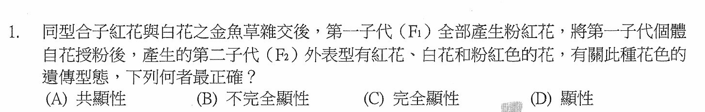
本地原卷PDF2 · 官方原答案PDF1（生物50題） · 已核對同年生物釋疑PDF2英文後至4（未列本題）
官方採計：B 原答案：B
未列本輪取得的112年度生物釋疑PDF2英文後至4；依同年答案，不宣稱沒有其他未取得公告
主分類：Ch14 Mendel and the Gene Idea
14.3 / Extending Mendelian Genetics for a Single Gene
目錄行892；條目起始印刷頁278；實際目錄 PDF38
主分類理由：14.3 / Extending Mendelian Genetics for a Single Gene：以紅白純合親本、粉紅F1及F2分離辨認單基因不完全顯性。
次分類理由：無另列最小次條目；重看三代表型與A–D，異型合子粉紅而非紅白並列，確認14.3單基因延伸；不需另立發育主題。
科學說明：官方B。異型合子表型介於兩純合子之間，屬不完全顯性；共顯性是兩種表型皆可辨認，不能因F2有三種顏色便稱共顯性。
來源涵蓋範圍：以本地Campbell實際目錄及列示正文作分類依據，原題限定與同年釋疑另存；不將正文小標冒充目錄條目。
教材正文：印刷278／PDF327、印刷279／PDF328
補充來源：本題未另列課本外來源
另行比較：共顯性是否較不完全顯性合適？
重看三代表型與A–D，異型合子粉紅而非紅白並列，確認14.3單基因延伸；不需另立發育主題。
結論：證據確認，分類疑義已解決。完整覆核紀錄
Q02 · 43.4 / Exaggerated, Self-Directed, and Diminished Immune Responses 正式分類
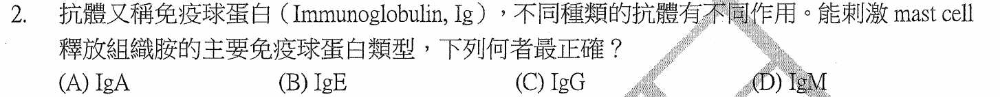
本地原卷PDF2 · 官方原答案PDF1（生物50題） · 已核對同年生物釋疑PDF2英文後至4（未列本題）
官方採計：B 原答案：B
未列本輪取得的112年度生物釋疑PDF2英文後至4；依同年答案，不宣稱沒有其他未取得公告
主分類：Ch43 The Immune System
43.4 / Exaggerated, Self-Directed, and Diminished Immune Responses
目錄行2924；條目起始印刷頁970；實際目錄 PDF47
次分類：Ch43 The Immune System
43.3 / B Cells and Antibodies: A Response to Extracellular Pathogens
目錄行2899；條目起始印刷頁964；實際目錄 PDF47
主分類理由：43.4 / Exaggerated, Self-Directed, and Diminished Immune Responses：辨認IgE與肥大細胞參與的立即型過敏。
次分類理由：43.3 / B Cells and Antibodies: A Response to Extracellular Pathogens：補足不同抗體類別的功能與IgE定位。
科學說明：官方B。IgE先結合肥大細胞，致敏後過敏原交聯其表面IgE才引發脫顆粒與組織胺釋放；不能理解為游離IgE單獨必然使細胞釋放組織胺。
來源涵蓋範圍：以本地Campbell實際目錄及列示正文作分類依據，原題限定與同年釋疑另存；不將正文小標冒充目錄條目。
教材正文：印刷965／PDF1014、印刷970／PDF1019、印刷971／PDF1020
補充來源：本題未另列課本外來源
另行比較：抗體一般功能是否應取代過敏作主分類？
實看IgE選項並比對965及970–971，IgE與mast cell脫顆粒是過敏直接情境；抗體功能留次目。
結論：證據確認，分類疑義已解決。完整覆核紀錄
Q03 · 47.2 / Organogenesis 正式分類
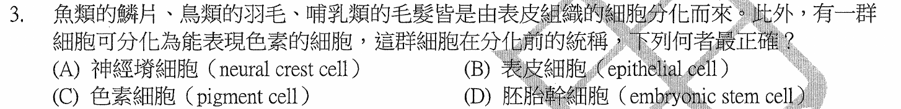
本地原卷PDF2 · 官方原答案PDF1（生物50題） · 已核對同年生物釋疑PDF2英文後至4（未列本題）
官方採計：A 原答案：A
未列本輪取得的112年度生物釋疑PDF2英文後至4；依同年答案，不宣稱沒有其他未取得公告
主分類：Ch47 Animal Development
47.2 / Organogenesis
目錄行3150；條目起始印刷頁1054；實際目錄 PDF48
次分類：Ch34 The Origin and Evolution of Vertebrates
34.2 / Derived Characters of Vertebrates
目錄行2170；條目起始印刷頁722；實際目錄 PDF44
主分類理由：47.2 / Organogenesis：題目問色素細胞前驅細胞的胚胎來源，核心是神經脊遷移與器官形成。
次分類理由：34.2 / Derived Characters of Vertebrates：補足神經脊為脊椎動物衍生特徵及其產物。
科學說明：官方A（神經脊細胞）。須區分色素細胞來源與皮膚附屬構造來源；原題把魚鱗、羽毛、毛髮一概稱表皮衍生物過度概括。斑馬魚鱗片研究顯示真皮成鱗細胞沉積鈣化基質，不能用這句概括否定A。
來源涵蓋範圍：教材支援分類原理，未直接涵蓋的專名與細節由同年釋疑／具名補充來源補足；實讀範圍與下載限制見來源紀錄。
教材正文：印刷722／PDF771、印刷723／PDF772、印刷1054／PDF1103、印刷1055／PDF1104
補充來源：S02、S08
另行比較：魚鱗表皮來源的前提是否使神經脊分類失效？
原題確寫皆由表皮分化；另以魚鱗原始研究及神經脊色素前驅研究補查，前提過寬與A採計分開。47.2器官形成作主、34.2神經脊特徵作次。
結論：證據確認，分類疑義已解決。完整覆核紀錄
Q04 · 17.5 / Types of Small-Scale Mutations 正式分類
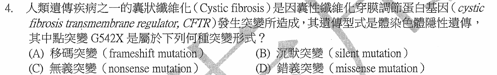
本地原卷PDF2 · 官方原答案PDF1（生物50題） · 已核對同年生物釋疑PDF2英文後至4（未列本題）
官方採計：C 原答案：C
未列本輪取得的112年度生物釋疑PDF2英文後至4；依同年答案，不宣稱沒有其他未取得公告
主分類：Ch17 Gene Expression: From Gene to Protein
17.5 / Types of Small-Scale Mutations
目錄行1085；條目起始印刷頁357；實際目錄 PDF39
次分類：Ch14 Mendel and the Gene Idea
14.4 / Recessively Inherited Disorders
目錄行911；條目起始印刷頁285；實際目錄 PDF38
主分類理由：17.5 / Types of Small-Scale Mutations：G542X表示第542位甘胺酸改為終止訊號，直接考小尺度突變類型。
次分類理由：14.4 / Recessively Inherited Disorders：CFTR與隱性囊性纖維化提供人類遺傳疾病背景。
科學說明：官方C（無義突變）。ClinVar的CFTR c.1624G>T／p.Gly542Ter與題中G542X相符；這是胺基酸密碼子變為終止密碼子，不是同義或一般錯義替換。
來源涵蓋範圍：教材支援分類原理，未直接涵蓋的專名與細節由同年釋疑／具名補充來源補足；實讀範圍與下載限制見來源紀錄。
教材正文：印刷285／PDF334、印刷286／PDF335、印刷357／PDF406、印刷358／PDF407
補充來源：S03
另行比較：X是否表示未知胺基酸而非終止？
以ClinVar G542*／Gly542Ter及原圖G542X確認無義突變，17.5較14.4疾病背景直接。
結論：證據確認，分類疑義已解決。完整覆核紀錄
Q05 · 9.5 / Comparing Fermentation with Anaerobic and Aerobic Respiration 正式分類
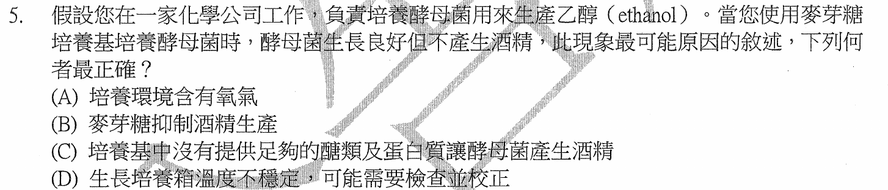
本地原卷PDF2 · 官方原答案PDF1（生物50題） · 已核對同年生物釋疑PDF2英文後至4（未列本題）
官方採計：A 原答案：A
未列本輪取得的112年度生物釋疑PDF2英文後至4；依同年答案，不宣稱沒有其他未取得公告
主分類：Ch09 Cellular Respiration and Fermentation
9.5 / Comparing Fermentation with Anaerobic and Aerobic Respiration
目錄行598；條目起始印刷頁181；實際目錄 PDF37
次分類：Ch09 Cellular Respiration and Fermentation
9.5 / Types of Fermentation
目錄行595；條目起始印刷頁180；實際目錄 PDF37
主分類理由：9.5 / Comparing Fermentation with Anaerobic and Aerobic Respiration：酵母生長而不產酒精，需比較有氧呼吸與發酵條件。
次分類理由：9.5 / Types of Fermentation：酒精發酵的產物與NAD+再生機制支援判別。
科學說明：官方A（含有氧氣），屬題目預期的呼吸／發酵對照。不能擴張成所有酵母只要有氧就不產酒精：Crabtree陽性酵母可在有氧、高糖下產乙醇。補充研究實驗用葡萄糖，不能冒充本題麥芽糖培養的實測；原卷沒有菌株、糖濃度與氧耗資料。
來源涵蓋範圍：教材支援分類原理，未直接涵蓋的專名與細節由同年釋疑／具名補充來源補足；實讀範圍與下載限制見來源紀錄。
教材正文：印刷180／PDF229、印刷181／PDF230、印刷182／PDF231
補充來源：S06
另行比較：有氧是否足以保證不產乙醇？
第二輪原圖A只寫含有氧氣，修正初稿氧氣充足措辭。原始Crabtree實驗提供有氧產酒精反例，仍確認9.5呼吸與發酵比較；不把葡萄糖實驗說成麥芽糖實測。
結論：證據確認，分類疑義已解決。完整覆核紀錄
Q06 · 42.1 / Organization of Vertebrate Circulatory Systems 正式分類
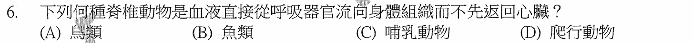
本地原卷PDF2 · 官方原答案PDF1（生物50題） · 已核對同年生物釋疑PDF2英文後至4（未列本題）
官方採計：B 原答案：B
未列本輪取得的112年度生物釋疑PDF2英文後至4；依同年答案，不宣稱沒有其他未取得公告
主分類：Ch42 Circulation and Gas Exchange
42.1 / Organization of Vertebrate Circulatory Systems
目錄行2763；條目起始印刷頁924；實際目錄 PDF46
主分類理由：42.1 / Organization of Vertebrate Circulatory Systems：直接辨認魚類血液每輪只經心臟一次的單循環。
次分類理由：無另列最小次條目；重走心臟、鰓、身體、心臟路徑，魚類每輪經心一次；Circulatory Systems為最小目錄定位。
科學說明：官方B。心臟→鰓微血管→全身微血管→心臟為單循環；兩套微血管床不等於雙循環，不能只以心腔數替代循環路徑。
來源涵蓋範圍：以本地Campbell實際目錄及列示正文作分類依據，原題限定與同年釋疑另存；不將正文小標冒充目錄條目。
教材正文：印刷924／PDF973、印刷925／PDF974
補充來源：本題未另列課本外來源
另行比較：有兩套微血管床是否為雙循環？
重走心臟、鰓、身體、心臟路徑，魚類每輪經心一次；Circulatory Systems為最小目錄定位。
結論：證據確認，分類疑義已解決。完整覆核紀錄
Q07 · 47.2 / Gastrulation 正式分類
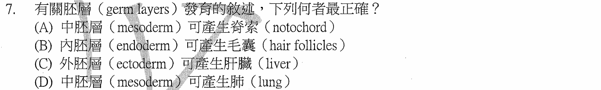
本地原卷PDF2 · 官方原答案PDF1（生物50題） · 已核對同年生物釋疑PDF2英文後至4（未列本題）
官方採計：A 原答案：A
未列本輪取得的112年度生物釋疑PDF2英文後至4；依同年答案，不宣稱沒有其他未取得公告
主分類：Ch47 Animal Development
47.2 / Gastrulation
目錄行3144；條目起始印刷頁1049；實際目錄 PDF48
次分類：Ch47 Animal Development
47.2 / Organogenesis
目錄行3150；條目起始印刷頁1054；實際目錄 PDF48
主分類理由：47.2 / Gastrulation：比較三胚層形成及衍生組織，脊索屬中胚層。
次分類理由：47.2 / Organogenesis：器官形成中的脊索與神經管位置補足衍生關係。
科學說明：官方A。毛囊表皮來自外胚層，肝臟及肺的主要上皮來自內胚層；器官的結締、血管等成分可另來自中胚層，不能把整個混合器官說成只有單一胚層來源。
來源涵蓋範圍：以本地Campbell實際目錄及列示正文作分類依據，原題限定與同年釋疑另存；不將正文小標冒充目錄條目。
教材正文：印刷1050／PDF1099、印刷1051／PDF1100、印刷1054／PDF1103
補充來源：本題未另列課本外來源
另行比較：肺、肝含中胚層成分是否造成另個正答？
原圖問胚層衍生的入門對照，A脊索成立；依教材三胚層及器官形成保留混合器官的組織層次，不以整器官單一來源過度解釋。
結論：證據確認，分類疑義已解決。完整覆核紀錄
Q08 · 41.3 / Absorption in the Small Intestine 正式分類
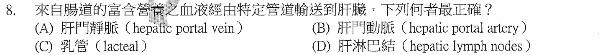
本地原卷PDF2 · 官方原答案PDF1（生物50題） · 已核對同年生物釋疑PDF2英文後至4（未列本題）
官方採計：A 原答案：A
未列本輪取得的112年度生物釋疑PDF2英文後至4；依同年答案，不宣稱沒有其他未取得公告
主分類：Ch41 Animal Nutrition
41.3 / Absorption in the Small Intestine
目錄行2717；條目起始印刷頁909；實際目錄 PDF46
主分類理由：41.3 / Absorption in the Small Intestine：腸吸收後的血液經肝門靜脈進肝，屬小腸營養吸收路徑。
次分類理由：無另列最小次條目；題幹限定富營養的血液送肝，A肝門靜脈直接；小腸吸收正文有明確路徑，脂質淋巴例外作說明而不擴增無必要次目。
科學說明：官方A（肝門靜脈）。糖與胺基酸等進腸微血管後匯入肝門靜脈；大部分長鏈脂質以乳糜微粒經乳糜管及淋巴輸送，因此「所有營養必先經肝門靜脈」不是本題可推出的結論。
來源涵蓋範圍：以本地Campbell實際目錄及列示正文作分類依據，原題限定與同年釋疑另存；不將正文小標冒充目錄條目。
教材正文：印刷909／PDF958、印刷910／PDF959
補充來源：本題未另列課本外來源
另行比較：乳糜管輸送脂肪是否應列循環主分類？
題幹限定富營養的血液送肝，A肝門靜脈直接；小腸吸收正文有明確路徑，脂質淋巴例外作說明而不擴增無必要次目。
結論：證據確認，分類疑義已解決。完整覆核紀錄
Q09 · 18.2 / Regulation of Chromatin Structure 正式分類
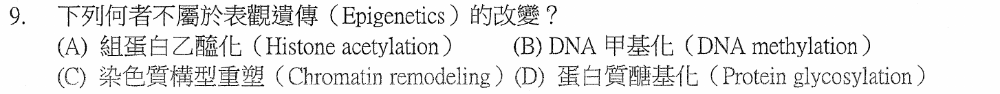
本地原卷PDF2 · 官方原答案PDF1（生物50題） · 已核對同年生物釋疑PDF2英文後至4（未列本題）
官方採計：D 原答案：D
未列本輪取得的112年度生物釋疑PDF2英文後至4；依同年答案，不宣稱沒有其他未取得公告
主分類：Ch18 Regulation of Gene Expression
18.2 / Regulation of Chromatin Structure
目錄行1123；條目起始印刷頁371；實際目錄 PDF39
主分類理由：18.2 / Regulation of Chromatin Structure：組蛋白修飾、DNA甲基化及染色質重塑均直接屬染色質調控。
次分類理由：無另列最小次條目；原圖A–C直接為染色質調節，D一般醣化不是該層級；最小條目Regulation of Chromatin Structure確認。
科學說明：官方D（蛋白質醣化）。一般蛋白質醣化本身不是典型表觀遺傳機制；不把所有翻譯後修飾都等同表觀遺傳，也不主張任何含醣修飾都絕不可能參與染色質調節。
來源涵蓋範圍：以本地Campbell實際目錄及列示正文作分類依據，原題限定與同年釋疑另存；不將正文小標冒充目錄條目。
教材正文：印刷371／PDF420、印刷372／PDF421、印刷373／PDF422
補充來源：本題未另列課本外來源
另行比較：所有蛋白翻譯後修飾是否都屬表觀遺傳？
原圖A–C直接為染色質調節，D一般醣化不是該層級；最小條目Regulation of Chromatin Structure確認。
結論：證據確認，分類疑義已解決。完整覆核紀錄
Q10 · 45.1 / Intercellular Information Flow 正式分類
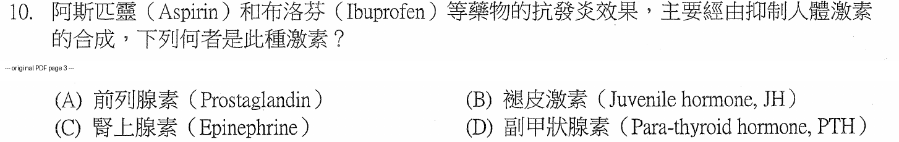
本地原卷PDF2 · 官方原答案PDF1（生物50題） · 已核對同年生物釋疑PDF2英文後至4（未列本題）
官方採計：A 原答案：A
未列本輪取得的112年度生物釋疑PDF2英文後至4；依同年答案，不宣稱沒有其他未取得公告
主分類：Ch45 Hormones and the Endocrine System
45.1 / Intercellular Information Flow
目錄行2998；條目起始印刷頁1000；實際目錄 PDF47
次分類：Ch50 Sensory and Motor Mechanisms
50.1 / Types of Sensory Receptors
目錄行3341；條目起始印刷頁1110；實際目錄 PDF49
主分類理由：45.1 / Intercellular Information Flow：前列腺素作為局部調節物的細胞間訊息作用直接涵蓋藥物抑制其合成。
次分類理由：50.1 / Types of Sensory Receptors：補足前列腺素增敏痛覺與aspirin、ibuprofen減痛的關係。
科學說明：官方A。Aspirin與ibuprofen抑制前列腺素合成而減少疼痛及發炎；前列腺素可作局部調節物，不宜因題幹稱激素便改歸傳統血液循環內分泌。
來源涵蓋範圍：以本地Campbell實際目錄及列示正文作分類依據，原題限定與同年釋疑另存；不將正文小標冒充目錄條目。
教材正文：印刷1000／PDF1049、印刷1001／PDF1050、印刷1111／PDF1160、印刷1112／PDF1161
補充來源：本題未另列課本外來源
另行比較：題稱激素是否必須歸傳統內分泌腺？
跨頁完整圖與1001正文直接對上prostaglandin；局部訊息為主，1111–1112痛覺增敏留次。
結論：證據確認，分類疑義已解決。完整覆核紀錄
Q11 · 16.2 / Proofreading and Repairing DNA 正式分類
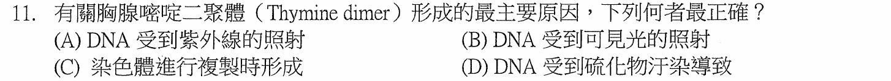
本地原卷PDF3 · 官方原答案PDF1（生物50題） · 已核對同年生物釋疑PDF2英文後至4（未列本題）
官方採計：A 原答案：A
未列本輪取得的112年度生物釋疑PDF2英文後至4；依同年答案，不宣稱沒有其他未取得公告
主分類：Ch16 The Molecular Basis of Inheritance
16.2 / Proofreading and Repairing DNA
目錄行1013；條目起始印刷頁327；實際目錄 PDF39
次分類：Ch17 Gene Expression: From Gene to Protein
17.5 / New Mutations and Mutagens
目錄行1088；條目起始印刷頁360；實際目錄 PDF39
主分類理由：16.2 / Proofreading and Repairing DNA：紫外線造成胸腺嘧啶二聚體，教材以切除修復直接示範。
次分類理由：17.5 / New Mutations and Mutagens：紫外線作物理致突變因子提供成因分類。
科學說明：官方A。紫外線可使同股相鄰胸腺嘧啶共價連結；可見光、正常複製或泛称污染並非題目特定損傷的標準成因。保留原題損傷名稱，未將二聚體誤判成DNA雙股間連結。
來源涵蓋範圍：以本地Campbell實際目錄及列示正文作分類依據，原題限定與同年釋疑另存；不將正文小標冒充目錄條目。
教材正文：印刷327／PDF376、印刷328／PDF377、印刷360／PDF409
補充來源：本題未另列課本外來源
另行比較：損傷成因與修復應如何排主次？
題問thymine dimer成因；16.2切除修復示例直接包含UV二聚體，17.5物理致突變因子支援。保留主次而不另造DNA損傷目錄項。
結論：證據確認，分類疑義已解決。完整覆核紀錄
Q12 · 7.4 / Cotransport: Coupled Transport by a Membrane Protein 正式分類
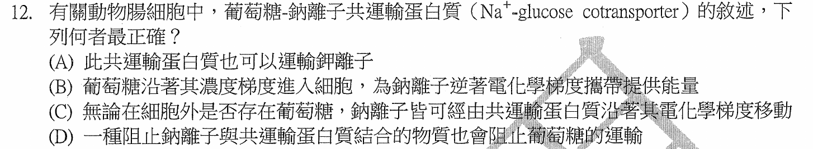
本地原卷PDF3 · 官方原答案PDF1（生物50題） · 已核對同年生物釋疑PDF2英文後至4（未列本題）
官方採計：D 原答案：D
未列本輪取得的112年度生物釋疑PDF2英文後至4；依同年答案，不宣稱沒有其他未取得公告
主分類：Ch07 Membrane Structure and Function
7.4 / Cotransport: Coupled Transport by a Membrane Protein
目錄行456；條目起始印刷頁138；實際目錄 PDF36
主分類理由：7.4 / Cotransport: Coupled Transport by a Membrane Protein：鈉與葡萄糖共運輸及Na+梯度能量耦合是直接考點。
次分類理由：無另列最小次條目；重看D的阻止Na+結合條件與139頁腸道共運輸，確認能量耦合而非雙向任意獨立流通；補列實讀139頁。
科學說明：官方D。阻斷Na+結合可阻止此共運輸循環，葡萄糖運輸不獨立於Na+；K+是維持梯度之Na+/K+泵的成員，不等於SGLT也共運K+。教材印刷139確列腸道Na+/glucose cotransporter；分類採真實目錄Cotransport而非自行新增SGLT條目。
來源涵蓋範圍：以本地Campbell實際目錄及列示正文作分類依據，原題限定與同年釋疑另存；不將正文小標冒充目錄條目。
教材正文：印刷137／PDF186、印刷138／PDF187、印刷139／PDF188
補充來源：本題未另列課本外來源
另行比較：共運輸蛋白與Na+/K+泵能否混同？
重看D的阻止Na+結合條件與139頁腸道共運輸，確認能量耦合而非雙向任意獨立流通；補列實讀139頁。
結論：證據確認，分類疑義已解決。完整覆核紀錄
Q13 · 21.1 / The Human Genome Project fostered development of faster, less expensive sequencing techniques 正式分類
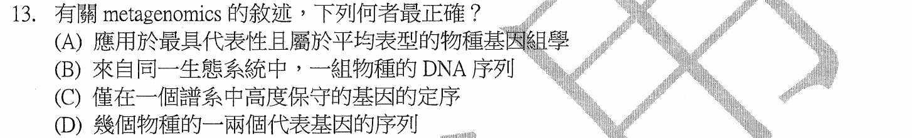
本地原卷PDF3 · 官方原答案PDF1（生物50題） · 已核對同年生物釋疑PDF2英文後至4（未列本題）
官方採計：B 原答案：B
未列本輪取得的112年度生物釋疑PDF2英文後至4；依同年答案，不宣稱沒有其他未取得公告
主分類：Ch21 Genomes and Their Evolution
21.1 / The Human Genome Project fostered development of faster, less expensive sequencing techniques
目錄行1293；條目起始印刷頁443；實際目錄 PDF40
主分類理由：21.1 / The Human Genome Project fostered development of faster, less expensive sequencing techniques：印刷444的群落DNA定序段位於Concept21.1結尾，該概念沒有更小的目錄子項。
次分類理由：無另列最小次條目；實看PDF493左欄metagenomics在Concept Check21.1之前，目錄PDF40顯示21.1無子目，確認以概念本身為最小節點。
科學說明：官方B。總體基因體學收集同一環境群落的DNA並定序，不是平均表型、少數保守基因或單一物種基因體。正文雖在444頁，仍在21.1的Concept Check之前；不能因同頁開始21.2就誤歸資料庫條目，也不虛構metagenomics目錄葉節點。
來源涵蓋範圍：以本地Campbell實際目錄及列示正文作分類依據，原題限定與同年釋疑另存；不將正文小標冒充目錄條目。
教材正文：印刷443／PDF492、印刷444／PDF493
補充來源：本題未另列課本外來源
另行比較：444頁是否屬21.2最小資料庫條目？
實看PDF493左欄metagenomics在Concept Check21.1之前，目錄PDF40顯示21.1無子目，確認以概念本身為最小節點。
結論：證據確認，分類疑義已解決。完整覆核紀錄
Q14 · 18.1 / Operons: The Basic Concept 正式分類
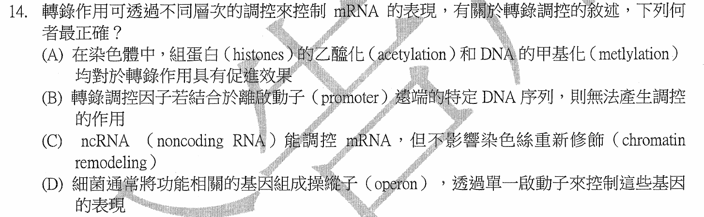
本地原卷PDF3 · 官方原答案PDF1（生物50題） · 同年釋疑PDF2
官方採計：D 原答案：D
112年度釋疑維持D
主分類：Ch18 Regulation of Gene Expression
18.1 / Operons: The Basic Concept
目錄行1107；條目起始印刷頁366；實際目錄 PDF39
次分類：Ch18 Regulation of Gene Expression
18.2 / Regulation of Chromatin Structure
目錄行1123；條目起始印刷頁371；實際目錄 PDF39
次分類：Ch18 Regulation of Gene Expression
18.2 / Regulation of Transcription Initiation
目錄行1126；條目起始印刷頁373；實際目錄 PDF39
次分類：Ch18 Regulation of Gene Expression
18.3 / Chromatin Remodeling and Effects on Transcription by ncRNAs
目錄行1139；條目起始印刷頁380；實際目錄 PDF39
主分類理由：18.1 / Operons: The Basic Concept：正確D直接描述細菌操縱組中多基因共用啟動子。
次分類理由：18.2 / Regulation of Chromatin Structure：A涉及組蛋白乙醯化與DNA甲基化作用差異；18.2 / Regulation of Transcription Initiation：B涉及遠端增強子與轉錄起始；18.3 / Chromatin Remodeling and Effects on Transcription by ncRNAs：C涉及ncRNA對染色質的作用。
科學說明：官方D，112釋疑PDF2維持。一般組蛋白乙醯化傾向鬆開染色質，DNA甲基化常與抑制轉錄有關；遠端控制元件及ncRNA都可參與調節。同章三個最小次目完整保留，章級不重複計數。
來源涵蓋範圍：以本地Campbell實際目錄及列示正文作分類依據，原題限定與同年釋疑另存；不將正文小標冒充目錄條目。
教材正文：印刷366／PDF415、印刷367／PDF416、印刷371／PDF420、印刷372／PDF421、印刷374／PDF423、印刷375／PDF424、印刷380／PDF429
補充來源：本題未另列課本外來源
另行比較：只取D會否遺漏同章其他調控層次？
同年釋疑維持D；A、B、C的錯誤須分別以染色質、起始調控與ncRNA三個最小次目說明，同章不丟棄。
結論：證據確認，分類疑義已解決。完整覆核紀錄
Q15 · 17.4 / Building a Polypeptide 正式分類
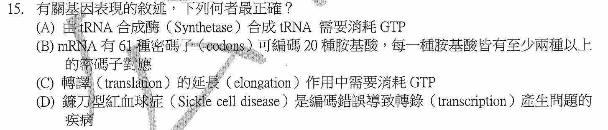
本地原卷PDF3 · 官方原答案PDF1（生物50題） · 已核對同年生物釋疑PDF2英文後至4（未列本題）
官方採計：C 原答案：C
未列本輪取得的112年度生物釋疑PDF2英文後至4；依同年答案，不宣稱沒有其他未取得公告
主分類：Ch17 Gene Expression: From Gene to Protein
17.4 / Building a Polypeptide
目錄行1072；條目起始印刷頁350；實際目錄 PDF39
次分類：Ch17 Gene Expression: From Gene to Protein
17.4 / Molecular Components of Translation
目錄行1069；條目起始印刷頁348；實際目錄 PDF39
次分類：Ch17 Gene Expression: From Gene to Protein
17.1 / The Genetic Code
目錄行1042；條目起始印刷頁340；實際目錄 PDF39
主分類理由：17.4 / Building a Polypeptide：正確C考延長階段的GTP消耗，屬多肽組裝。
次分類理由：17.4 / Molecular Components of Translation：胺醯tRNA合成酶以ATP進行充電；17.1 / The Genetic Code：遺傳密碼冗餘及Met、Trp單一密碼子解釋選項。
科學說明：官方C。胺醯tRNA合成酶不是合成tRNA本體，也非以GTP充電；延長的密碼辨認與轉位耗GTP。61個有義密碼子不代表每種胺基酸都有兩個以上密碼子；鐮刀型血球涉及蛋白序列改變，不能說成致病原因是轉錄過程本身出問題。
來源涵蓋範圍：以本地Campbell實際目錄及列示正文作分類依據，原題限定與同年釋疑另存；不將正文小標冒充目錄條目。
教材正文：印刷340／PDF389、印刷341／PDF390、印刷348／PDF397、印刷349／PDF398、印刷350／PDF399、印刷351／PDF400、印刷352／PDF401
補充來源：本題未另列課本外來源
另行比較：是否把tRNA合成、充電與翻譯混為一談？
重新讀349及352，ATP充電與GTP延長分開；原D說轉錄出問題，修改初稿不精確的轉錄胺基酸措辭，C與17.4組裝定位確認。
結論：證據確認，分類疑義已解決。完整覆核紀錄
Q16 · 16.2 / DNA Replication: A Closer Look 正式分類
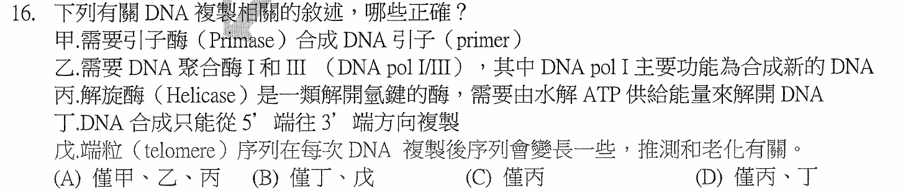
本地原卷PDF3 · 官方原答案PDF1（生物50題） · 已核對同年生物釋疑PDF2英文後至4（未列本題）
官方採計：D 原答案：D
未列本輪取得的112年度生物釋疑PDF2英文後至4；依同年答案，不宣稱沒有其他未取得公告
主分類：Ch16 The Molecular Basis of Inheritance
16.2 / DNA Replication: A Closer Look
目錄行1010；條目起始印刷頁322；實際目錄 PDF39
次分類：Ch16 The Molecular Basis of Inheritance
16.2 / Replicating the Ends of DNA Molecules
目錄行1019；條目起始印刷頁328；實際目錄 PDF39
主分類理由：16.2 / DNA Replication: A Closer Look：逐項判斷引子、聚合酶、解旋酶及合成方向。
次分類理由：16.2 / Replicating the Ends of DNA Molecules：端粒縮短與端粒酶例外解釋戊的錯誤。
科學說明：官方D（丙丁）。Primase造RNA引子；細菌主要延長酶為DNA polymerase III，I主要移除引子並補DNA；解旋需能量，DNA以5′→3′延長。複製並非每次使端粒變長，且DNA pol I／III的命名範圍須限細菌。
來源涵蓋範圍：以本地Campbell實際目錄及列示正文作分類依據，原題限定與同年釋疑另存；不將正文小標冒充目錄條目。
教材正文：印刷322／PDF371、印刷323／PDF372、印刷324／PDF373、印刷325／PDF374、印刷326／PDF375、印刷328／PDF377、印刷329／PDF378
補充來源：本題未另列課本外來源
另行比較：DNA polymerase I／III可否套所有生物？
原圖確用I及III，採細菌複製框架。甲RNA引子、乙酶分工、丙ATP、丁方向、戊端粒逐項覆算，D確認。
結論：證據確認，分類疑義已解決。完整覆核紀錄
Q17 · 8.5 / Allosteric Regulation of Enzymes 正式分類
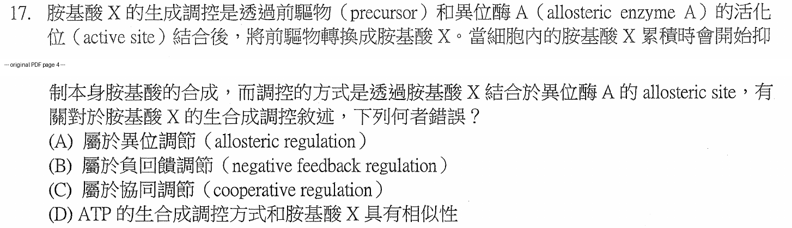
本地原卷PDF3 · 官方原答案PDF1（生物50題） · 已核對同年生物釋疑PDF2英文後至4（未列本題）
官方採計：C 原答案：C
未列本輪取得的112年度生物釋疑PDF2英文後至4；依同年答案，不宣稱沒有其他未取得公告
主分類：Ch08 An Introduction to Metabolism
8.5 / Allosteric Regulation of Enzymes
目錄行539；條目起始印刷頁160；實際目錄 PDF37
次分類：Ch09 Cellular Respiration and Fermentation
9.6 / Regulation of Cellular Respiration via Feedback Mechanisms
目錄行614；條目起始印刷頁183；實際目錄 PDF37
主分類理由：8.5 / Allosteric Regulation of Enzymes：產物X與酵素異位結合抑制自身生成，直接考異位調控及回饋抑制。
次分類理由：9.6 / Regulation of Cellular Respiration via Feedback Mechanisms：ATP回饋抑制呼吸途徑是D的教材類比。
科學說明：官方C。負回饋可以由異位抑制達成；協同作用通常指一個受質結合促進其他活性位結合，不是本題產物抑制自身合成。原題跨PDF3–4已拼接，不能漏讀D的ATP敘述。
來源涵蓋範圍：以本地Campbell實際目錄及列示正文作分類依據，原題限定與同年釋疑另存；不將正文小標冒充目錄條目。
教材正文：印刷160／PDF209、印刷161／PDF210、印刷182／PDF231、印刷183／PDF232
補充來源：本題未另列課本外來源
另行比較：產物抑制是否等於協同作用？
第二輪跨頁圖含完整D，核對160–161異位調節與183ATP回饋；C是應選錯項，Feedback inhibition為正文小標而非另造目錄。
結論：證據確認，分類疑義已解決。完整覆核紀錄
Q18 · 4.3 / The Chemical Groups Most Important in the Processes of Life 正式分類
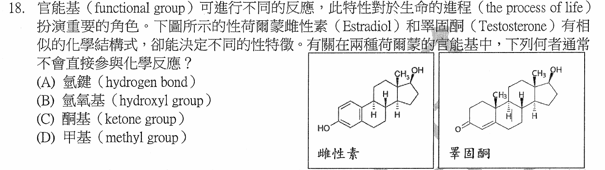
本地原卷PDF4 · 官方原答案PDF1（生物50題） · 同年釋疑PDF2
官方採計：D 原答案：D
112年度釋疑維持D
主分類：Ch04 Carbon and the Molecular Diversity of Life
4.3 / The Chemical Groups Most Important in the Processes of Life
目錄行211；條目起始印刷頁62；實際目錄 PDF35
主分類理由：4.3 / The Chemical Groups Most Important in the Processes of Life：從兩種固醇完整結構辨認具生物意義的化學基團。
次分類理由：無另列最小次條目；實看兩個固醇結構及Fig4.9；官方D維持，保存通常的限定與A名稱問題。主題仍為生物分子化學基團而非激素生理。
科學說明：官方D，釋疑PDF2維持。教材印刷62–63區分六種常參與反應的官能基與甲基；甲基影響分子形狀與功能，並非宣稱化學上永不反應。A的氫鍵本身也不是官能基，保留題目用語問題及出題意旨，不改寫原選項。
來源涵蓋範圍：以本地Campbell實際目錄及列示正文作分類依據，原題限定與同年釋疑另存；不將正文小標冒充目錄條目。
教材正文：印刷62／PDF111、印刷63／PDF112、印刷64／PDF113
補充來源：本題未另列課本外來源
另行比較：甲基不反應與氫鍵不是官能基如何處理？
實看兩個固醇結構及Fig4.9；官方D維持，保存通常的限定與A名稱問題。主題仍為生物分子化學基團而非激素生理。
結論：證據確認，分類疑義已解決。完整覆核紀錄
Q19 · 14.3 / Extending Mendelian Genetics for Two or More Genes 正式分類
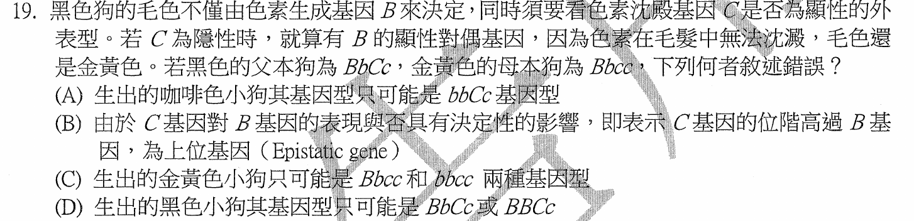
本地原卷PDF4 · 官方原答案PDF1（生物50題） · 已核對同年生物釋疑PDF2英文後至4（未列本題）
官方採計：C 原答案：C
未列本輪取得的112年度生物釋疑PDF2英文後至4；依同年答案，不宣稱沒有其他未取得公告
主分類：Ch14 Mendel and the Gene Idea
14.3 / Extending Mendelian Genetics for Two or More Genes
目錄行895；條目起始印刷頁281；實際目錄 PDF38
次分類：Ch14 Mendel and the Gene Idea
14.2 / Solving Complex Genetics Problems with the Rules of Probability
目錄行885；條目起始印刷頁277；實際目錄 PDF38
主分類理由：14.3 / Extending Mendelian Genetics for Two or More Genes：隱性cc遮蔽B位點色素表現，題目核心為上位作用。
次分類理由：14.2 / Solving Complex Genetics Problems with the Rules of Probability：以分離及乘法法則重算基因型與表型。
科學說明：官方C是錯誤敘述。依題設BbCc×Bbcc與獨立分配，BBCc、BBcc、BbCc、Bbcc、bbCc、bbcc比例為1:1:2:2:1:1；黃毛含BBcc、Bbcc、bbcc，C漏掉BBcc。黑3/8、棕1/8、黃1/2。教材常以E/e寫相同遮蔽機制，本題C/c原符號保留。
來源涵蓋範圍：以本地Campbell實際目錄及列示正文作分類依據，原題限定與同年釋疑另存；不將正文小標冒充目錄條目。
教材正文：印刷277／PDF326、印刷281／PDF330、印刷282／PDF331
補充來源：本題未另列課本外來源
另行比較：黃毛是否真的只有兩型？
重新列父母配子並得到六種基因型；C漏BBcc。cc遮蔽主題確定，概率次目支援；本題C/c與教材E/e差異保留。
結論：證據確認，分類疑義已解決。完整覆核紀錄
Q20 · 23.2 / The Hardy-Weinberg Equation 正式分類
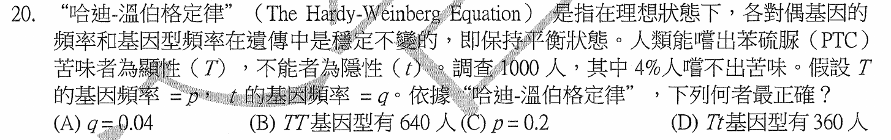
本地原卷PDF4 · 官方原答案PDF1（生物50題） · 已核對同年生物釋疑PDF2英文後至4（未列本題）
官方採計：B 原答案：B
未列本輪取得的112年度生物釋疑PDF2英文後至4；依同年答案，不宣稱沒有其他未取得公告
主分類：Ch23 The Evolution of Populations
23.2 / The Hardy-Weinberg Equation
目錄行1445；條目起始印刷頁490；實際目錄 PDF41
主分類理由：23.2 / The Hardy-Weinberg Equation：由隱性表型頻率推回等位基因與基因型頻率。
次分類理由：無另列最小次條目；獨立重算0.04平方根得q0.2，TT640、Tt320、tt40合1000；B確認，不由答案反推計算。
科學說明：官方B（640）。tt=0.04，q=0.2、p=0.8；TT=p²×1000=640，Tt=2pq×1000=320，tt=40。這是題設Hardy–Weinberg平衡模型，不能把顯性表型96%直接當TT頻率。
來源涵蓋範圍：以本地Campbell實際目錄及列示正文作分類依據，原題限定與同年釋疑另存；不將正文小標冒充目錄條目。
教材正文：印刷490／PDF539、印刷491／PDF540、印刷492／PDF541
補充來源：本題未另列課本外來源
另行比較：4%是q還是q²？
獨立重算0.04平方根得q0.2，TT640、Tt320、tt40合1000；B確認，不由答案反推計算。
結論：證據確認，分類疑義已解決。完整覆核紀錄
Q21 · 19.3 / Emerging Viral Diseases 正式分類
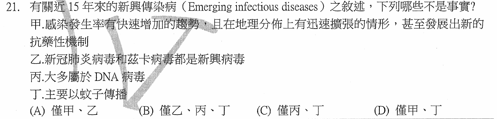
本地原卷PDF4 · 官方原答案PDF1（生物50題） · 已核對同年生物釋疑PDF2英文後至4（未列本題）
官方採計：C 原答案：C
未列本輪取得的112年度生物釋疑PDF2英文後至4；依同年答案，不宣稱沒有其他未取得公告
主分類：Ch19 Viruses
19.3 / Emerging Viral Diseases
目錄行1215；條目起始印刷頁409；實際目錄 PDF40
主分類理由：19.3 / Emerging Viral Diseases：新興病毒疾病的出現、傳播與範圍變動是主題。
次分類理由：無另列最小次條目；以112年為題設時間，核對同年答案C及RNA、呼吸／蚊媒差異；WHO補查只補教材出版後具名例子，不更新原題時間窗。
科學說明：官方C（丙丁不正確）。COVID-19與Zika符合題設例子；SARS-CoV-2及Zika均為RNA病毒，COVID-19主要經呼吸粒子傳播，不能概括新興病毒多為DNA或主要靠蚊媒。「最近15年」以112年考試時間為準，不能隨本輪日期平移；抗藥性或範圍增加可為情境，非每一新興疾病必有的定義。
來源涵蓋範圍：教材支援分類原理，未直接涵蓋的專名與細節由同年釋疑／具名補充來源補足；實讀範圍與下載限制見來源紀錄。
教材正文：印刷409／PDF458、印刷410／PDF459、印刷411／PDF460、印刷412／PDF461
補充來源：S07
另行比較：考試最近15年與本輪日期是否混淆？
以112年為題設時間，核對同年答案C及RNA、呼吸／蚊媒差異；WHO補查只補教材出版後具名例子，不更新原題時間窗。
結論：證據確認，分類疑義已解決。完整覆核紀錄
Q22 · 40.3 / Balancing Heat Loss and Gain 正式分類
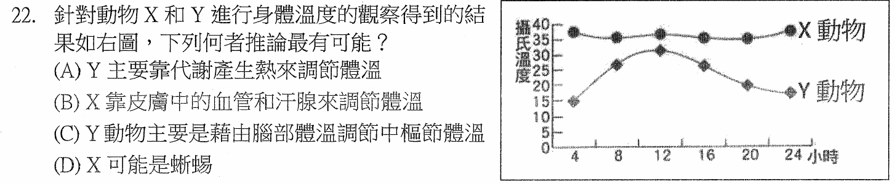
本地原卷PDF4 · 官方原答案PDF1（生物50題） · 已核對同年生物釋疑PDF2英文後至4（未列本題）
官方採計：B 原答案：B
未列本輪取得的112年度生物釋疑PDF2英文後至4；依同年答案，不宣稱沒有其他未取得公告
主分類：Ch40 Basic Principles of Animal Form and Function
40.3 / Balancing Heat Loss and Gain
目錄行2649；條目起始印刷頁885；實際目錄 PDF46
次分類：Ch40 Basic Principles of Animal Form and Function
40.3 / Variation in Body Temperature
目錄行2646；條目起始印刷頁884；實際目錄 PDF46
主分類理由：40.3 / Balancing Heat Loss and Gain：由恆定體溫曲線連到血管舒縮、蒸散等熱量平衡機制。
次分類理由：40.3 / Variation in Body Temperature：區分內溫／外溫的熱源與恆溫／變溫的變動程度。
科學說明：官方B。X在圖中接近恆定，Y隨時間變動，B為預期的生理調節例子；圖未提供環境溫度、熱來源或汗腺資料，單靠體溫穩定不能證明必為內溫動物，更不能保證一定有汗腺。兩種概念依教材884分開保存。
來源涵蓋範圍：以本地Campbell實際目錄及列示正文作分類依據，原題限定與同年釋疑另存；不將正文小標冒充目錄條目。
教材正文：印刷883／PDF932、印刷884／PDF933、印刷885／PDF934、印刷886／PDF935、印刷887／PDF936、印刷888／PDF937
補充來源：本題未另列課本外來源
另行比較：平坦曲線是否能直接證明汗腺與內溫？
重看橫軸只有時間、沒有環境溫度；B作預期最可能解釋，保留圖推論限制及884頁熱源／溫度變動的區別。
結論：證據確認，分類疑義已解決。完整覆核紀錄
Q23 · 45.3 / Parathyroid Hormone and Vitamin D: Control of Blood Calcium 正式分類
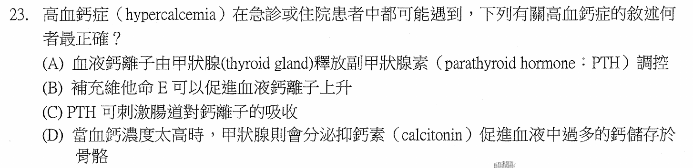
本地原卷PDF5 · 官方原答案PDF1（生物50題） · 同年釋疑PDF3
官方採計：D 原答案：D
112年度釋疑維持D
主分類：Ch45 Hormones and the Endocrine System
45.3 / Parathyroid Hormone and Vitamin D: Control of Blood Calcium
目錄行3036；條目起始印刷頁1011；實際目錄 PDF47
主分類理由：45.3 / Parathyroid Hormone and Vitamin D: Control of Blood Calcium：高血鈣條件下的降鈣素與副甲狀腺素負回饋。
次分類理由：無另列最小次條目；官方釋疑維持D；C在一般生理可經維生素D間接成立，高血鈣條件與直接／間接不可抹除。教材1011–1012已足確定鈣恆定最小條目。
科學說明：官方D，釋疑PDF3維持。降鈣素由甲狀腺分泌，可促進鈣沉積骨骼；PTH由副甲狀腺分泌，藉活化維生素D間接促進腸鈣吸收，但高血鈣時應抑制PTH。C的一般作用不能脫離高血鈣題設解讀。成人鈣恆定中降鈣素作用較小，教材1011已有此限定。
來源涵蓋範圍：以本地Campbell實際目錄及列示正文作分類依據，原題限定與同年釋疑另存；不將正文小標冒充目錄條目。
教材正文：印刷1011／PDF1060、印刷1012／PDF1061
補充來源：本題未另列課本外來源
另行比較：PTH促腸吸收是否錯誤？
官方釋疑維持D；C在一般生理可經維生素D間接成立，高血鈣條件與直接／間接不可抹除。教材1011–1012已足確定鈣恆定最小條目。
結論：證據確認，分類疑義已解決。完整覆核紀錄
Q24 · 41.5 / Regulation of Appetite and Consumption 正式分類
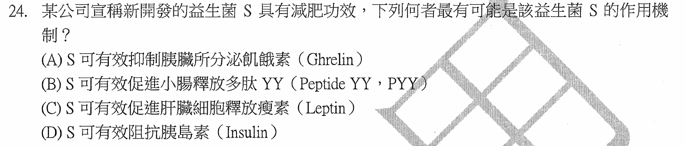
本地原卷PDF5 · 官方原答案PDF1（生物50題） · 已核對同年生物釋疑PDF2英文後至4（未列本題）
官方採計：B 原答案：B
未列本輪取得的112年度生物釋疑PDF2英文後至4；依同年答案，不宣稱沒有其他未取得公告
主分類：Ch41 Animal Nutrition
41.5 / Regulation of Appetite and Consumption
目錄行2746；條目起始印刷頁917；實際目錄 PDF46
主分類理由：41.5 / Regulation of Appetite and Consumption：辨認PYY、ghrelin、leptin及insulin對食慾和能量平衡的角色。
次分類理由：無另列最小次條目；原題為某公司宣稱，依PYY來源與食慾作用辨B；只保存機制判讀，未下益生菌療效結論。
科學說明：官方B。PYY由小腸等腸道來源釋出、降低食慾；ghrelin主要來自胃且促飢餓，leptin主要來自脂肪。題設益生菌產品是假想機制，不能據此宣稱任何產品已證實減重有效。
來源涵蓋範圍：以本地Campbell實際目錄及列示正文作分類依據，原題限定與同年釋疑另存；不將正文小標冒充目錄條目。
教材正文：印刷917／PDF966、印刷918／PDF967
補充來源：本題未另列課本外來源
另行比較：產品宣稱是否當成已驗證療效？
原題為某公司宣稱，依PYY來源與食慾作用辨B；只保存機制判讀，未下益生菌療效結論。
結論：證據確認，分類疑義已解決。完整覆核紀錄
Q25 · 43.3 / Cytotoxic T Cells: A Response to Infected Host Cells 正式分類
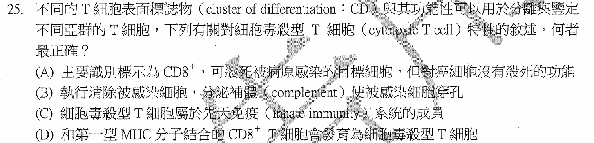
本地原卷PDF5 · 官方原答案PDF1（生物50題） · 已核對同年生物釋疑PDF2英文後至4（未列本題）
官方採計：D 原答案：D
未列本輪取得的112年度生物釋疑PDF2英文後至4；依同年答案，不宣稱沒有其他未取得公告
主分類：Ch43 The Immune System
43.3 / Cytotoxic T Cells: A Response to Infected Host Cells
目錄行2902；條目起始印刷頁966；實際目錄 PDF47
次分類：Ch43 The Immune System
43.2 / Antigen Recognition by T Cells
目錄行2886；條目起始印刷頁959；實際目錄 PDF47
主分類理由：43.3 / Cytotoxic T Cells: A Response to Infected Host Cells：細胞毒殺T細胞以CD8協助辨認MHC I呈現之抗原。
次分類理由：43.2 / Antigen Recognition by T Cells：補足抗原處理呈現與T細胞辨認的前提。
科學說明：官方D。CTL可殺受感染及部分癌細胞，以perforin與granzymes誘發死亡，不是分泌補體進行穿孔；此為後天免疫。分類保留辨認及執行兩個同章最小條目。
來源涵蓋範圍：以本地Campbell實際目錄及列示正文作分類依據，原題限定與同年釋疑另存；不將正文小標冒充目錄條目。
教材正文：印刷959／PDF1008、印刷960／PDF1009、印刷963／PDF1012、印刷966／PDF1015、印刷967／PDF1016
補充來源：本題未另列課本外來源
另行比較：CD8辨認與perforin功能如何定位？
圖中D為CD8及MHC I，A排除癌細胞、B補體、C先天皆不符；細胞毒殺與抗原呈現兩最小節點確認。
結論：證據確認，分類疑義已解決。完整覆核紀錄
Q26 · 3.3 / Acidification: A Threat to Our Oceans 正式分類
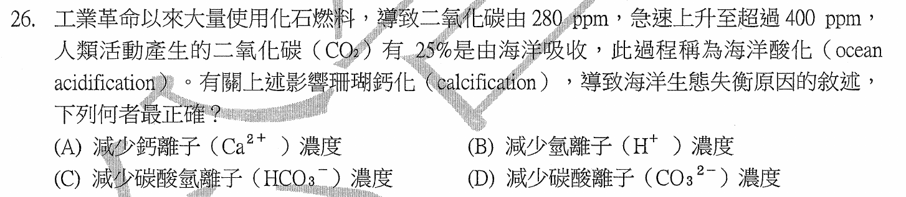
本地原卷PDF5 · 官方原答案PDF1（生物50題） · 已核對同年生物釋疑PDF2英文後至4（未列本題）
官方採計：D 原答案：D
未列本輪取得的112年度生物釋疑PDF2英文後至4；依同年答案，不宣稱沒有其他未取得公告
主分類：Ch03 Water and Life
3.3 / Acidification: A Threat to Our Oceans
目錄行184；條目起始印刷頁53；實際目錄 PDF35
主分類理由：3.3 / Acidification: A Threat to Our Oceans：CO2溶入海水引發酸鹼平衡並降低碳酸根濃度。
次分類理由：無另列最小次條目；重寫CO2／H+／HCO3−／CO3²−平衡方向，D碳酸根減少；化學平衡比廣義氣候變遷更直接。
科學說明：官方D。增加H+消耗CO3²⁻形成HCO3⁻，使形成CaCO3較困難；不能把海洋酸化直接等同Ca²⁺總量下降，也不能把CO3²⁻和HCO3⁻混為一談。
來源涵蓋範圍：以本地Campbell實際目錄及列示正文作分類依據，原題限定與同年釋疑另存；不將正文小標冒充目錄條目。
教材正文：印刷53／PDF102、印刷54／PDF103
補充來源：本題未另列課本外來源
另行比較：海洋酸化主要減少何種離子？
重寫CO2／H+／HCO3−／CO3²−平衡方向，D碳酸根減少；化學平衡比廣義氣候變遷更直接。
結論：證據確認，分類疑義已解決。完整覆核紀錄
Q27 · 6.7 / Cell Junctions 正式分類
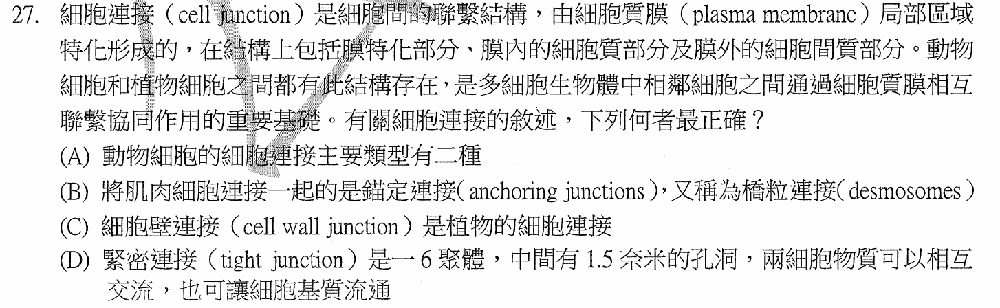
本地原卷PDF5 · 官方原答案PDF1（生物50題） · 已核對同年生物釋疑PDF2英文後至4（未列本題）
官方採計：B 原答案：B
未列本輪取得的112年度生物釋疑PDF2英文後至4；依同年答案，不宣稱沒有其他未取得公告
主分類：Ch06 A Tour of the Cell
6.7 / Cell Junctions
目錄行394；條目起始印刷頁119；實際目錄 PDF36
主分類理由：6.7 / Cell Junctions：動物細胞間連接的密接、橋粒及間隙連接辨識。
次分類理由：無另列最小次條目；原B有又稱字樣；依119–120橋粒為錨定一類保留層級限制。D的通道不是緊密連接，主分類細胞連接確認。
科學說明：官方B。橋粒是錨定連接的一類，可聯結承受拉力的細胞；錨定連接不全等於橋粒。D描述的六次單元通道屬間隙連接而非密接；植物壁間連絡為胞間連絲，不沿用錯置名稱。
來源涵蓋範圍：以本地Campbell實際目錄及列示正文作分類依據，原題限定與同年釋疑另存；不將正文小標冒充目錄條目。
教材正文：印刷119／PDF168、印刷120／PDF169
補充來源：本題未另列課本外來源
另行比較：anchoring junction與desmosome是否完全同義？
原B有又稱字樣；依119–120橋粒為錨定一類保留層級限制。D的通道不是緊密連接，主分類細胞連接確認。
結論：證據確認，分類疑義已解決。完整覆核紀錄
Q28 · 11.3 / Small Molecules and Ions as Second Messengers 正式分類
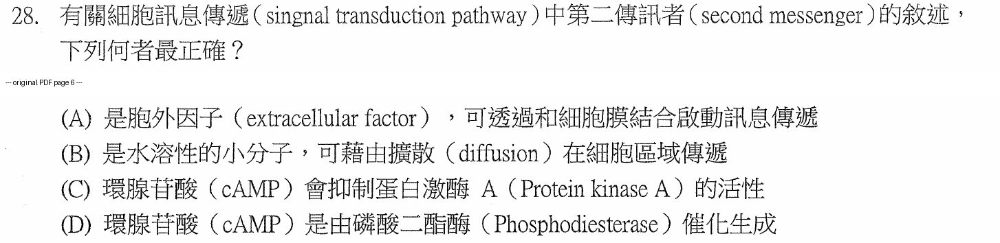
本地原卷PDF5 · 官方原答案PDF1（生物50題） · 已核對同年生物釋疑PDF2英文後至4（未列本題）
官方採計：B 原答案：B
未列本輪取得的112年度生物釋疑PDF2英文後至4；依同年答案，不宣稱沒有其他未取得公告
主分類：Ch11 Cell Communication
11.3 / Small Molecules and Ions as Second Messengers
文字目錄漏and Ions；保留text_toc_title並採實際PDF目錄完整名稱。 目錄行724；條目起始印刷頁223；實際目錄 PDF38
主分類理由：11.3 / Small Molecules and Ions as Second Messengers：cAMP、Ca²⁺等細胞內第二訊息傳遞及其產消機制。
次分類理由：無另列最小次條目；跨頁A–D齊全；cAMP活化PKA與PDE降解方向核對，B僅常見可溶例子。實際PDF標題含and Ions，保存文字目錄漏字來源差異。
科學說明：官方B。cAMP活化PKA，phosphodiesterase分解cAMP，並非製造cAMP；第二訊息也不是細胞外第一訊息。B的可水溶、快速擴散適用常見例子，不能概括膜內DAG。文字目錄漏寫and Ions，本輪以實際PDF目錄的Small Molecules and Ions as Second Messengers校正條目，同時保留原文字目錄標題。
來源涵蓋範圍：以本地Campbell實際目錄及列示正文作分類依據，原題限定與同年釋疑另存；不將正文小標冒充目錄條目。
教材正文：印刷223／PDF272、印刷224／PDF273、印刷225／PDF274
補充來源：本題未另列課本外來源
另行比較：B是否適用所有第二訊息？
跨頁A–D齊全；cAMP活化PKA與PDE降解方向核對，B僅常見可溶例子。實際PDF標題含and Ions，保存文字目錄漏字來源差異。
結論：證據確認，分類疑義已解決。完整覆核紀錄
Q29 · 11.4 / Regulation of the Response 正式分類
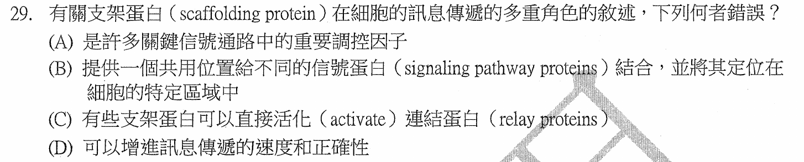
本地原卷PDF6 · 官方原答案PDF1（生物50題） · 同年釋疑PDF3
官方採計：B 原答案：B
112年度釋疑維持B
主分類：Ch11 Cell Communication
11.4 / Regulation of the Response
目錄行734；條目起始印刷頁226；實際目錄 PDF38
主分類理由：11.4 / Regulation of the Response：支架蛋白以特定位置聚集訊息蛋白而提升傳遞效率。
次分類理由：無另列最小次條目；原卷為一個共用位置，公告為多個共用位置；教材228明言某些支架可直接活化relay proteins。維持B採計且保存兩個原句版本及頁碼差異。
科學說明：官方B，釋疑PDF3維持。原卷B寫「一個共用位置」，公告引文改為「多個共用位置」，兩者不可當同一句。不同訊息蛋白依特定位點結合；教材228明寫某些支架蛋白本身可直接活化relay proteins，故不能把C一概判錯。公告所指230頁與本地228頁不同，保留並以本地實際定位分類。
來源涵蓋範圍：以本地Campbell實際目錄及列示正文作分類依據，原題限定與同年釋疑另存；不將正文小標冒充目錄條目。
教材正文：印刷226／PDF275、印刷227／PDF276、印刷228／PDF277、印刷229／PDF278、印刷230／PDF279
補充來源：本題未另列課本外來源
另行比較：官方B引文與原卷是否一致，C直接活化是否有教材依據？
原卷為一個共用位置，公告為多個共用位置；教材228明言某些支架可直接活化relay proteins。維持B採計且保存兩個原句版本及頁碼差異。
結論：證據確認，分類疑義已解決。完整覆核紀錄
Q30 · 26.5 / Molecular Clocks 正式分類
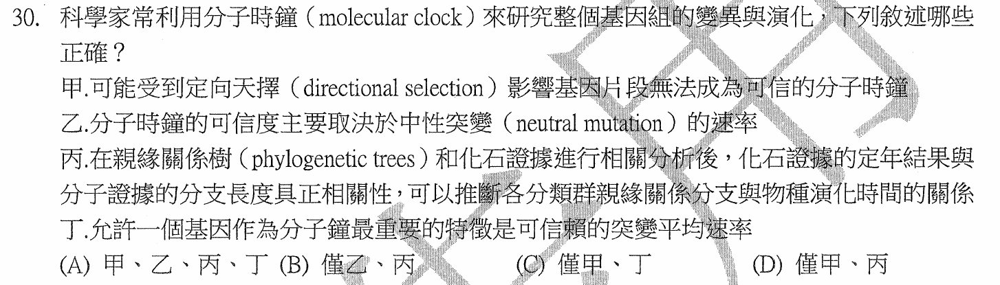
本地原卷PDF6 · 官方原答案PDF1（生物50題） · 已核對同年生物釋疑PDF2英文後至4（未列本題）
官方採計：A 原答案：A
未列本輪取得的112年度生物釋疑PDF2英文後至4；依同年答案，不宣稱沒有其他未取得公告
主分類：Ch26 Phylogeny and the Tree of Life
26.5 / Molecular Clocks
目錄行1685；條目起始印刷頁566；實際目錄 PDF42
次分類：Ch26 Phylogeny and the Tree of Life
26.3 / Phylogenetic Trees with Proportional Branch Lengths
目錄行1662；條目起始印刷頁561；實際目錄 PDF42
主分類理由：26.5 / Molecular Clocks：以分子替換速率估計分歧時間，並檢查中性假說與校準條件。
次分類理由：26.3 / Phylogenetic Trees with Proportional Branch Lengths：演化樹分枝長度可代表變化量或經校準的時間。
科學說明：官方A（甲乙丙丁）。分子時鐘須校準，嚴格時鐘受速率差異、選汰及基因差異限制；中性替換較適合。原甲寫「可能」因定向天擇而無法成為可信時鐘，不能擴張成任何選汰都使所有時計方法失效。分枝長度未經定義及校準不能直接當年代。
來源涵蓋範圍：以本地Campbell實際目錄及列示正文作分類依據，原題限定與同年釋疑另存；不將正文小標冒充目錄條目。
教材正文：印刷561／PDF610、印刷562／PDF611、印刷566／PDF615、印刷567／PDF616
補充來源：本題未另列課本外來源
另行比較：原甲是否宣稱有天擇便一律失效？
重看原圖有可能二字，修正初稿過度批判；可靠平均速率與化石校準為必要前提，四項按官方A與教材時計原理解讀。
結論：證據確認，分類疑義已解決。完整覆核紀錄
Q31 · 28.3 / Rhizarians 正式分類
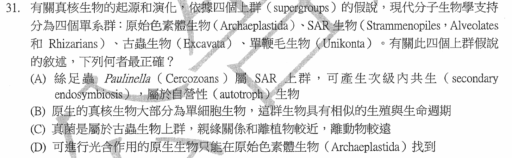
本地原卷PDF6 · 官方原答案PDF1（生物50題） · 同年釋疑PDF3、同年釋疑PDF4
官方採計：A 原答案：A
112年度釋疑維持A
主分類：Ch28 Protists
28.3 / Rhizarians
目錄行1820；條目起始印刷頁606；實際目錄 PDF42
次分類：Ch28 Protists
28.1 / Endosymbiosis in Eukaryotic Evolution
目錄行1794；條目起始印刷頁594；實際目錄 PDF42
次分類：Ch28 Protists
28.1 / Four Supergroups of Eukaryotes
目錄行1797；條目起始印刷頁597；實際目錄 PDF42
次分類：Ch28 Protists
28.5 / Opisthokonts
目錄行1840；條目起始印刷頁613；實際目錄 PDF42
主分類理由：28.3 / Rhizarians：Paulinella位於SAR的Rhizaria，是具名案例最直接目錄位置。
次分類理由：28.1 / Endosymbiosis in Eukaryotic Evolution：區分初級與次級內共生；28.1 / Four Supergroups of Eukaryotes：以教材四超群框架核對題目分類；28.5 / Opisthokonts：真菌和動物同屬Opisthokonts支援C判讀。
科學說明：官方A，釋疑PDF3–4維持；科學上A的「次級」有誤。教材印刷608 Fig28.22與Paulinella原始研究支持另一宗初級內共生：宿主取得藍綠菌，不是吞入已具葉綠體的真核藻。第二宗事件不等於次級內共生。公告解釋C時仍寫真菌在Excavata，也與本地四超群圖中Unikonta／Opisthokonts不同。官方採計A照存，不將公告科學敘述當分類真理。
來源涵蓋範圍：教材支援分類原理，未直接涵蓋的專名與細節由同年釋疑／具名補充來源補足；實讀範圍與下載限制見來源紀錄。
教材正文：印刷594／PDF643、印刷595／PDF644、印刷596／PDF645、印刷597／PDF646、印刷598／PDF647、印刷599／PDF648、印刷607／PDF656、印刷608／PDF657、印刷609／PDF658、印刷613／PDF662
補充來源：S01
另行比較：第二次取得光合構造是否等於次級內共生？
Fig28.22及原始研究均為獨立初級事件，明確排除混淆。A官方不改，真菌Excavata誤述亦照記；Rhizarians主目及內共生／四超群／Opisthokonts次目確認。
結論：證據確認，分類疑義已解決。完整覆核紀錄
Q32 · 29.1 / Adaptations Enabling the Move to Land 正式分類
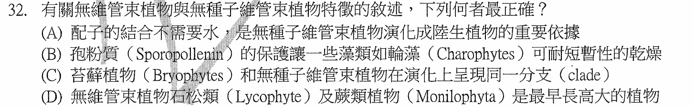
本地原卷PDF6 · 官方原答案PDF1（生物50題） · 已核對同年生物釋疑PDF2英文後至4（未列本題）
官方採計：B 原答案：B
未列本輪取得的112年度生物釋疑PDF2英文後至4；依同年答案，不宣稱沒有其他未取得公告
主分類：Ch29 Plant Diversity I: How Plants Colonized Land
29.1 / Adaptations Enabling the Move to Land
目錄行1864；條目起始印刷頁619；實際目錄 PDF43
次分類：Ch29 Plant Diversity I: How Plants Colonized Land
29.3 / Origins and Traits of Vascular Plants
目錄行1890；條目起始印刷頁629；實際目錄 PDF43
主分類理由：29.1 / Adaptations Enabling the Move to Land：Sporopollenin保護暴露於乾燥環境的綠藻合子，是登陸適應的直接例子。
次分類理由：29.3 / Origins and Traits of Vascular Plants：比較石松與蕨類等無種子維管植物的分類與特徵。
科學說明：官方B。石松與蕨類是維管植物；無種子植物通常仍需水讓精子到達卵，且苔蘚加無種子維管植物排除種子植物不是完整單系群。合子／孢子耐乾保護與維管束不可混為一個特徵。
來源涵蓋範圍：以本地Campbell實際目錄及列示正文作分類依據，原題限定與同年釋疑另存；不將正文小標冒充目錄條目。
教材正文：印刷619／PDF668、印刷620／PDF669、印刷621／PDF670、印刷629／PDF678、印刷630／PDF679、印刷631／PDF680
補充來源：本題未另列課本外來源
另行比較：孢粉質是整株輪藻通用耐旱外被嗎？
教材619定位在暴露合子保護，採B意旨並補特定階段；石松和蕨類維管地位核對，不能沿D錯稱無維管。
結論：證據確認，分類疑義已解決。完整覆核紀錄
Q33 · 30.1 / The Evolutionary Advantage of Seeds 正式分類
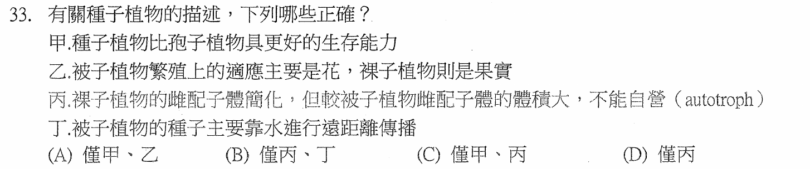
本地原卷PDF6 · 官方原答案PDF1（生物50題） · 已核對同年生物釋疑PDF2英文後至4（未列本題）
官方採計：C 原答案：C
未列本輪取得的112年度生物釋疑PDF2英文後至4；依同年答案，不宣稱沒有其他未取得公告
主分類：Ch30 Plant Diversity II: The Evolution of Seed Plants
30.1 / The Evolutionary Advantage of Seeds
目錄行1919；條目起始印刷頁639；實際目錄 PDF43
次分類：Ch30 Plant Diversity II: The Evolution of Seed Plants
30.1 / Advantages of Reduced Gametophytes
目錄行1907；條目起始印刷頁637；實際目錄 PDF43
次分類：Ch30 Plant Diversity II: The Evolution of Seed Plants
30.3 / Characteristics of Angiosperms
目錄行1939；條目起始印刷頁644；實際目錄 PDF43
主分類理由：30.1 / The Evolutionary Advantage of Seeds：比較種子對胚的保護、養分與休眠散播優勢。
次分類理由：30.1 / Advantages of Reduced Gametophytes：配子體縮小及受母體保護支援丙；30.3 / Characteristics of Angiosperms：果實與被子植物特徵支援乙丁。
科學說明：官方C（甲丙）。種子一般較裸露孢子多保護與營養，但不是任意環境存活率都較高；裸子植物不形成真正果實。裸子雌配子體相對苔蘚縮小、依賴孢子體，仍通常大於被子雌配子體；被子種子沒有「大部分靠水」的一律散播方式。
來源涵蓋範圍：以本地Campbell實際目錄及列示正文作分類依據，原題限定與同年釋疑另存；不將正文小標冒充目錄條目。
教材正文：印刷637／PDF686、印刷638／PDF687、印刷639／PDF688、印刷640／PDF689、印刷644／PDF693、印刷645／PDF694
補充來源：本題未另列課本外來源
另行比較：裸子雌配子體能否直接等同被子胚乳？
補讀640生命史，裸子雌配子體n營養組織與被子通常3n胚乳分開；甲丙C確認，種子與配子體及果實條目各有角色。
結論：證據確認，分類疑義已解決。完整覆核紀錄
Q34 · 31.3 / The Origin of Fungi 正式分類
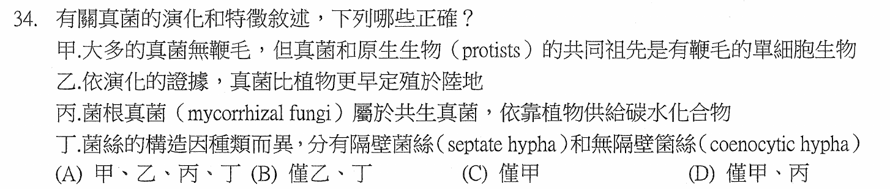
本地原卷PDF7 · 官方原答案PDF1（生物50題） · 已核對同年生物釋疑PDF2英文後至4（未列本題）
官方採計：A 原答案：A
未列本輪取得的112年度生物釋疑PDF2英文後至4；依同年答案，不宣稱沒有其他未取得公告
主分類：Ch31 Fungi
31.3 / The Origin of Fungi
目錄行1989；條目起始印刷頁659；實際目錄 PDF43
次分類：Ch31 Fungi
31.3 / The Move to Land
目錄行1992；條目起始印刷頁660；實際目錄 PDF43
次分類：Ch31 Fungi
31.1 / Body Structure
目錄行1969；條目起始印刷頁655；實際目錄 PDF43
次分類：Ch31 Fungi
31.1 / Specialized Hyphae in Mycorrhizal Fungi
目錄行1972；條目起始印刷頁656；實際目錄 PDF43
主分類理由：31.3 / The Origin of Fungi：真菌祖先與具鞭毛水生原生生物的演化關係是甲的核心。
次分類理由：31.3 / The Move to Land：登陸先後的證據與推測層級；31.1 / Body Structure：隔膜及多核菌絲結構；31.1 / Specialized Hyphae in Mycorrhizal Fungi：菌根交換碳水與土壤營養。
科學說明：官方A（甲乙丙丁）。教材推論真菌可能早於植物登陸，不能把可能性提升為確定時間順序；菌根中真菌取得植物碳水化合物。具隔膜與無隔膜多核菌絲皆存在，並非所有真菌一種體制。
來源涵蓋範圍：以本地Campbell實際目錄及列示正文作分類依據，原題限定與同年釋疑另存；不將正文小標冒充目錄條目。
教材正文：印刷655／PDF704、印刷656／PDF705、印刷659／PDF708、印刷660／PDF709
補充來源：本題未另列課本外來源
另行比較：真菌較早登陸是否定論？
原乙較肯定而教材660為推測語氣，差異保留；甲、丙、丁以祖先、菌根與菌絲正文核對，官方A不改。
結論：證據確認，分類疑義已解決。完整覆核紀錄
Q35 · 32.4 / The Diversification of Animals 正式分類
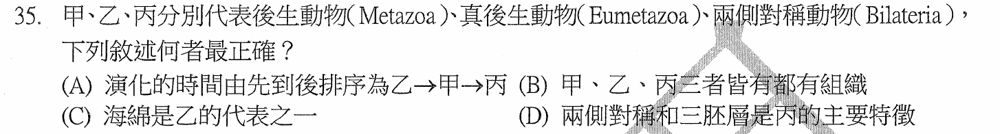
本地原卷PDF7 · 官方原答案PDF1（生物50題） · 已核對同年生物釋疑PDF2英文後至4（未列本題）
官方採計：D 原答案：D
未列本輪取得的112年度生物釋疑PDF2英文後至4；依同年答案，不宣稱沒有其他未取得公告
主分類：Ch32 An Overview of Animal Diversity
32.4 / The Diversification of Animals
目錄行2083；條目起始印刷頁682；實際目錄 PDF43
次分類：Ch32 An Overview of Animal Diversity
32.3 / Tissues
目錄行2070；條目起始印刷頁679；實際目錄 PDF43
次分類：Ch32 An Overview of Animal Diversity
32.3 / Symmetry
目錄行2067；條目起始印刷頁679；實際目錄 PDF43
主分類理由：32.4 / The Diversification of Animals：後生動物、真後生動物與兩側對稱動物的嵌套支序關係。
次分類理由：32.3 / Tissues：海綿缺乏真正組織可辨認Eumetazoa邊界；32.3 / Symmetry：兩側對稱與三胚層體制支援D。
科學說明：官方D。Metazoa包含Eumetazoa，Eumetazoa包含Bilateria，海綿不歸真後生動物；兩側對稱動物通常為三胚層。不能用部分成體次生輻射對稱去抹除其演化位置。
來源涵蓋範圍：以本地Campbell實際目錄及列示正文作分類依據，原題限定與同年釋疑另存；不將正文小標冒充目錄條目。
教材正文：印刷679／PDF728、印刷680／PDF729、印刷682／PDF731、印刷683／PDF732、印刷684／PDF733
補充來源：本題未另列課本外來源
另行比較：以成體對稱取代支序關係是否恰當？
原A把真後生放在後生之前，海綿不屬Eumetazoa；D為Bilateria主要特徵。支序、組織、對稱三最小節點保留。
結論：證據確認，分類疑義已解決。完整覆核紀錄
Q36 · 35.5 / Genetic Control of Flowering 正式分類
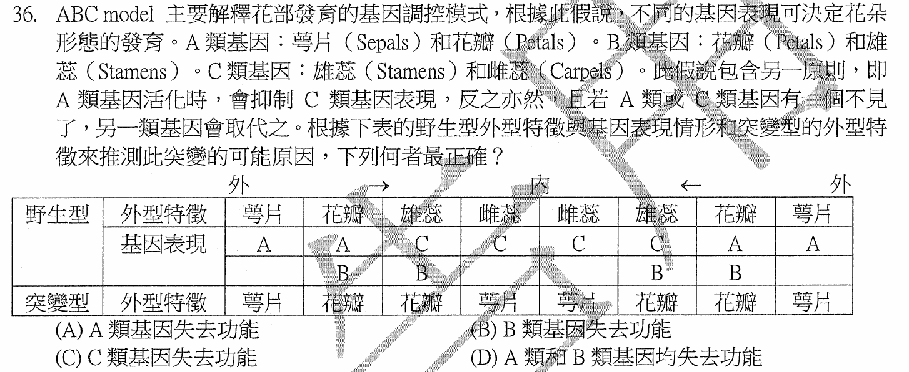
本地原卷PDF7 · 官方原答案PDF1（生物50題） · 已核對同年生物釋疑PDF2英文後至4（未列本題）
官方採計：C 原答案：C
未列本輪取得的112年度生物釋疑PDF2英文後至4；依同年答案，不宣稱沒有其他未取得公告
主分類：Ch35 Vascular Plant Structure, Growth, and Development
35.5 / Genetic Control of Flowering
目錄行2338；條目起始印刷頁779；實際目錄 PDF44
主分類理由：35.5 / Genetic Control of Flowering：表格所示萼片、花瓣、花瓣、萼片需用花器官身分基因的ABC模型解釋。
次分類理由：無另列最小次條目；完整表是向中心的左右鏡射四輪；獨立依A/C互抑重建A、AB、AB、A，C失效唯一符合，與Fig35.33相符。
科學說明：官方C（C類基因失效）。由外而內正常A、AB、BC、C；失去C時A擴及內兩輪，成A、AB、AB、A。已看完整左右鏡射表格，不能把兩半誤當八個不同輪。ABC是正文模型，最小目錄仍為Genetic Control of Flowering。
來源涵蓋範圍：以本地Campbell實際目錄及列示正文作分類依據，原題限定與同年釋疑另存；不將正文小標冒充目錄條目。
教材正文：印刷779／PDF828、印刷780／PDF829
補充來源：本題未另列課本外來源
另行比較：表中左右八欄是否八輪花器？
完整表是向中心的左右鏡射四輪；獨立依A/C互抑重建A、AB、AB、A，C失效唯一符合，與Fig35.33相符。
結論：證據確認，分類疑義已解決。完整覆核紀錄
Q37 · 38.1 / The Angiosperm Life Cycle: An Overview 正式分類
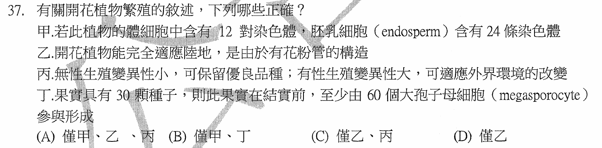
本地原卷PDF7 · 官方原答案PDF1（生物50題） · 已核對同年生物釋疑PDF2英文後至4（未列本題）
官方採計：C 原答案：C
未列本輪取得的112年度生物釋疑PDF2英文後至4；依同年答案，不宣稱沒有其他未取得公告
主分類：Ch38 Angiosperm Reproduction and Biotechnology
38.1 / The Angiosperm Life Cycle: An Overview
目錄行2486；條目起始印刷頁826；實際目錄 PDF45
次分類：Ch38 Angiosperm Reproduction and Biotechnology
38.1 / Development of Female Gametophytes (Embryo Sacs)
目錄行2489；條目起始印刷頁826；實際目錄 PDF45
次分類：Ch38 Angiosperm Reproduction and Biotechnology
38.2 / Advantages and Disadvantages of Asexual and Sexual Reproduction
目錄行2511；條目起始印刷頁833；實際目錄 PDF45
次分類：Ch30 Plant Diversity II: The Evolution of Seed Plants
30.1 / Pollen and Production of Sperm
目錄行1916；條目起始印刷頁638；實際目錄 PDF43
主分類理由：38.1 / The Angiosperm Life Cycle: An Overview：雙重受精中的染色體套數與精卵結合是組合題的主要判別。
次分類理由：38.1 / Development of Female Gametophytes (Embryo Sacs)：從大孢子母細胞到雌配子體支援丁的母細胞數判別；38.2 / Advantages and Disadvantages of Asexual and Sexual Reproduction：有性與無性繁殖對變異的影響；30.1 / Pollen and Production of Sperm：花粉傳送精子降低外界水的依賴。
科學說明：官方C（乙丙）。2n=24時一般胚乳3n=36，不能寫24；30顆種子通常需30個可用胚珠與卵，雙重受精需要兩個精子不等於60個大孢子母細胞。花粉管免除游動精子跨外部水膜的需求，不等於植物所有生命需求都「完全」不依賴水。
來源涵蓋範圍：以本地Campbell實際目錄及列示正文作分類依據，原題限定與同年釋疑另存；不將正文小標冒充目錄條目。
教材正文：印刷638／PDF687、印刷826／PDF875、印刷827／PDF876、印刷828／PDF877、印刷833／PDF882、印刷834／PDF883
補充來源：本題未另列課本外來源
另行比較：雙重受精是否代表兩倍大孢子母細胞？
12對=24體染色體，胚乳36；30種子正常需30胚珠及卵，不是60母細胞。乙水依賴與丙變異分別核對，C確認。
結論：證據確認，分類疑義已解決。完整覆核紀錄
Q38 · 53.1 / Demographics 正式分類
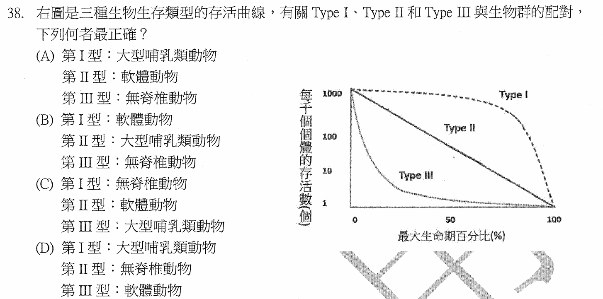
本地原卷PDF8 · 官方原答案PDF1（生物50題） · 同年釋疑PDF4
官方採計：A 原答案：A
112年度釋疑維持A
主分類：Ch53 Population Ecology
53.1 / Demographics
目錄行3534；條目起始印刷頁1193；實際目錄 PDF49
主分類理由：53.1 / Demographics：完整圖中的三種存活曲線依年齡別死亡率定義，屬族群人口統計。
次分類理由：無另列最小次條目；重看圖與1194圖文，兩類重疊且物種族群曲線可變；官方A及公告例子保留，不冒稱未取得Ecology全文。人口統計分類已能確定。
科學說明：官方A，釋疑PDF4維持。I早中期死亡少、II大致固定死亡率、III幼期大量死亡；教材1194以牡蠣示III，且許多無脊椎動物可為II。軟體動物與無脊椎動物為重疊大類，不能一律各只配一條曲線。公告引Ecology 5th個別螺種，本輪未取得該書全文，不冒稱重讀其259–261頁；分類按已讀曲線原理即可確定。
來源涵蓋範圍：以本地Campbell實際目錄及列示正文作分類依據，原題限定與同年釋疑另存；不將正文小標冒充目錄條目。
教材正文：印刷1193／PDF1242、印刷1194／PDF1243、印刷1195／PDF1244
補充來源：本題未另列課本外來源
另行比較：軟體動物、無脊椎動物是否互斥曲線類群？
重看圖與1194圖文，兩類重疊且物種族群曲線可變；官方A及公告例子保留，不冒稱未取得Ecology全文。人口統計分類已能確定。
結論：證據確認，分類疑義已解決。完整覆核紀錄
Q39 · 54.1 / Competition 正式分類
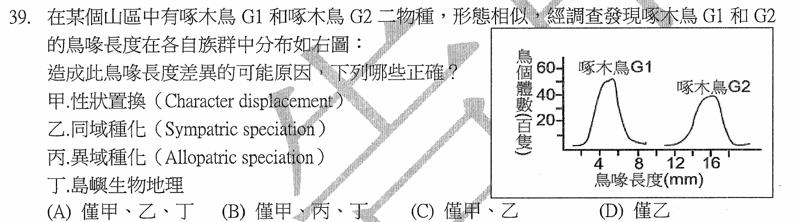
本地原卷PDF8 · 官方原答案PDF1（生物50題） · 已核對同年生物釋疑PDF2英文後至4（未列本題）
官方採計：C 原答案：C
未列本輪取得的112年度生物釋疑PDF2英文後至4；依同年答案，不宣稱沒有其他未取得公告
主分類：Ch54 Community Ecology
54.1 / Competition
目錄行3598；條目起始印刷頁1215；實際目錄 PDF50
次分類：Ch24 The Origin of Species
24.2 / Sympatric (“Same Country”) Speciation
目錄行1501；條目起始印刷頁513；實際目錄 PDF41
主分類理由：54.1 / Competition：同域物種喙形差異連到競爭及性狀位移假說。
次分類理由：24.2 / Sympatric (“Same Country”) Speciation：檢查同域物種形成是否能由現有分布證明。
科學說明：官方C（甲乙），保留作採計。原題問可能原因；G1/G2在同一地點的喙長分布可提示生態分化，但單張圖不足以證明競爭造成性狀位移，也不能證明兩種是在同域起源；尚須異域對照、歷史與遺傳等證據。分類依考查的競爭與物種形成概念確定，證據不足的因果結論另記。
來源涵蓋範圍：以本地Campbell實際目錄及列示正文作分類依據，原題限定與同年釋疑另存；不將正文小標冒充目錄條目。
教材正文：印刷513／PDF562、印刷514／PDF563、印刷515／PDF564、印刷1215／PDF1264、印刷1216／PDF1265、印刷1217／PDF1266
補充來源：本題未另列課本外來源
另行比較：同一山區兩物種是否證明同域形成？
原題問可能原因；甲乙作候選可理解，但圖也不能排除異域形成後再接觸。修正措辭不把可能推成必然，競爭主、同域形成次確認。
結論：證據確認，分類疑義已解決。完整覆核紀錄
Q40 · 55.1 / Energy Flow and Chemical Cycling 正式分類
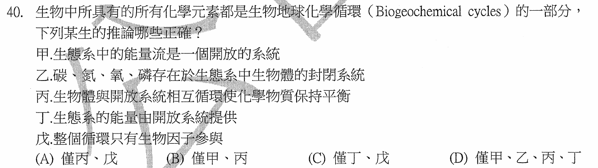
本地原卷PDF8 · 官方原答案PDF1（生物50題） · 已核對同年生物釋疑PDF2英文後至4（未列本題）
官方採計：D 原答案：D
未列本輪取得的112年度生物釋疑PDF2英文後至4；依同年答案，不宣稱沒有其他未取得公告
主分類：Ch55 Ecosystems and Restoration Ecology
55.1 / Energy Flow and Chemical Cycling
目錄行3670；條目起始印刷頁1239；實際目錄 PDF50
次分類：Ch55 Ecosystems and Restoration Ecology
55.1 / Conservation of Mass
目錄行3676；條目起始印刷頁1239；實際目錄 PDF50
次分類：Ch55 Ecosystems and Restoration Ecology
55.1 / Conservation of Energy
目錄行3673；條目起始印刷頁1239；實際目錄 PDF50
主分類理由：55.1 / Energy Flow and Chemical Cycling：比較生態系能量單向流動與化學物質循環。
次分類理由：55.1 / Conservation of Mass：物質守恆釐清封閉系統的邊界；55.1 / Conservation of Energy：能量守恆及散熱說明外部能量需求。
科學說明：官方D（甲乙丙丁）。若乙將「生態系內的生物體」稱為物質封閉系統，字面不成立：教材1239–1240明確說生態系的能量與物質均可輸入輸出。地球整體近似物質封閉、物質可循環，不代表個體或局部生態系封閉。依原句嚴格解讀無完全合適組合，保留官方D與此差異；戊只含生物成分也錯。
來源涵蓋範圍：以本地Campbell實際目錄及列示正文作分類依據，原題限定與同年釋疑另存；不將正文小標冒充目錄條目。
教材正文：印刷1239／PDF1288、印刷1240／PDF1289、印刷1249／PDF1298、印刷1250／PDF1299
補充來源：本題未另列課本外來源
另行比較：物質循環是否表示個體及局部生態系封閉？
原乙明寫生物體的封閉系統，與1239–1240生態系開放相異；官方D照存並記嚴格字面問題。循環及質量／能量守恆目錄確認。
結論：證據確認，分類疑義已解決。完整覆核紀錄
Q41 · 33.4 / Arthropods 正式分類
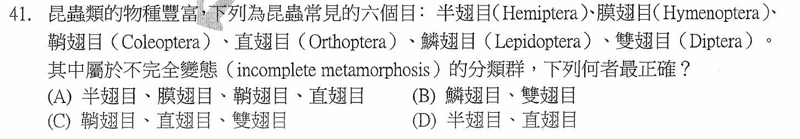
本地原卷PDF8 · 官方原答案PDF1（生物50題） · 已核對同年生物釋疑PDF2英文後至4（未列本題）
官方採計：D 原答案：D
未列本輪取得的112年度生物釋疑PDF2英文後至4；依同年答案，不宣稱沒有其他未取得公告
主分類：Ch33 An Introduction to Invertebrates
33.4 / Arthropods
目錄行2133；條目起始印刷頁706；實際目錄 PDF44
主分類理由：33.4 / Arthropods：半翅目與直翅目的不完全變態是節肢動物中昆蟲多樣性特徵。
次分類理由：無另列最小次條目；本題只限列出的六目，教材712逐目比對得D；沒有把其他未列目硬算進答案。
科學說明：官方D。若蟲近似小型成體而無蛹期；完全變態有幼蟲與蛹。以教材昆蟲表格核對目名，不虛構「不完全變態」為獨立最小目錄項。
來源涵蓋範圍：以本地Campbell實際目錄及列示正文作分類依據，原題限定與同年釋疑另存；不將正文小標冒充目錄條目。
教材正文：印刷709／PDF758、印刷710／PDF759、印刷711／PDF760、印刷712／PDF761、印刷713／PDF762
補充來源：本題未另列課本外來源
另行比較：半翅與直翅之外還有哪些不完全變態？
本題只限列出的六目，教材712逐目比對得D；沒有把其他未列目硬算進答案。
結論：證據確認，分類疑義已解決。完整覆核紀錄
Q42 · 31.2 / Asexual Reproduction 正式分類
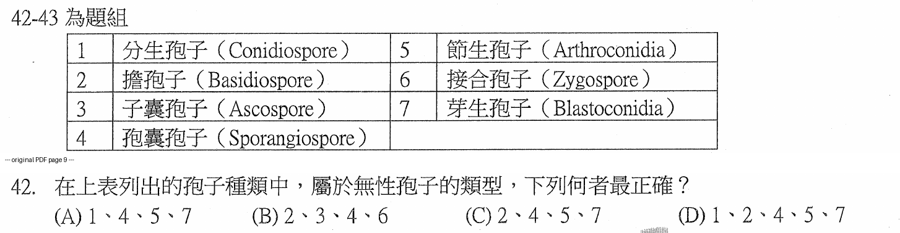
本地原卷PDF9 · 官方原答案PDF1（生物50題） · 已核對同年生物釋疑PDF2英文後至4（未列本題）
官方採計：A 原答案：A
未列本輪取得的112年度生物釋疑PDF2英文後至4；依同年答案，不宣稱沒有其他未取得公告
主分類：Ch31 Fungi
31.2 / Asexual Reproduction
目錄行1982；條目起始印刷頁658；實際目錄 PDF43
次分類：Ch31 Fungi
31.2 / Sexual Reproduction
目錄行1979；條目起始印刷頁658；實際目錄 PDF43
主分類理由：31.2 / Asexual Reproduction：從完整共享表區分無性孢子形成方式。
次分類理由：31.2 / Sexual Reproduction：核配及減數分裂的有性循環排除擔、子囊及接合孢子。
科學說明：官方A（1、4、5、7）：分生、孢囊、節及芽生孢子屬題設無性類型；2擔孢子、3子囊孢子、6接合孢子歸有性。Campbell支援生命史與conidia／sporangia，節孢子及芽生孢子專名另以大學真菌學辭彙核對。Q42與Q43均保留七項共享表。
來源涵蓋範圍：教材支援分類原理，未直接涵蓋的專名與細節由同年釋疑／具名補充來源補足；實讀範圍與下載限制見來源紀錄。
教材正文：印刷657／PDF706、印刷658／PDF707、印刷662／PDF711、印刷663／PDF712
補充來源：S04
另行比較：共享表是否漏掉芽生或節生孢子？
第二輪原圖含完整1–7表，查大學真菌學定義確認1、4、5、7無性。主無性、次有性生命史保留，同章去重。
結論：證據確認，分類疑義已解決。完整覆核紀錄
Q43 · 31.4 / Ascomycetes 正式分類
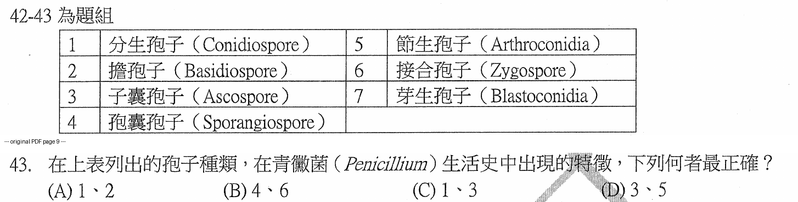
本地原卷PDF9 · 官方原答案PDF1（生物50題） · 已核對同年生物釋疑PDF2英文後至4（未列本題）
官方採計：C 原答案：C
未列本輪取得的112年度生物釋疑PDF2英文後至4；依同年答案，不宣稱沒有其他未取得公告
主分類：Ch31 Fungi
31.4 / Ascomycetes
目錄行2008；條目起始印刷頁663；實際目錄 PDF43
次分類：Ch31 Fungi
31.2 / Asexual Reproduction
目錄行1982；條目起始印刷頁658；實際目錄 PDF43
主分類理由：31.4 / Ascomycetes：Penicillium的子囊菌位置與子囊孢子／分生孢子辨認。
次分類理由：31.2 / Asexual Reproduction：分生孢子屬無性繁殖，與子囊內的有性孢子區分。
科學說明：官方C（1、3）。分生孢子及子囊孢子符合子囊菌生命史；並非每種、每株Penicillium在任意條件都同時產兩者。2013年P. chrysogenum研究在配對條件下證實有性循環及重組子囊孢子，支援屬內可具此途徑，不能把條件及菌株範圍抹除。
來源涵蓋範圍：教材支援分類原理，未直接涵蓋的專名與細節由同年釋疑／具名補充來源補足；實讀範圍與下載限制見來源紀錄。
教材正文：印刷658／PDF707、印刷663／PDF712、印刷664／PDF713、印刷665／PDF714、印刷670／PDF719
補充來源：S05
另行比較：青黴菌是否只能有無性孢子？
原始研究特定配對及biotin條件產可育子囊孢子並有重組；官方C為1、3，保留菌株條件及論文廣義chrysogenum命名，未推及所有青黴。
結論：證據確認，分類疑義已解決。完整覆核紀錄
Q44 · 10.3 / Cyclic Electron Flow 正式分類
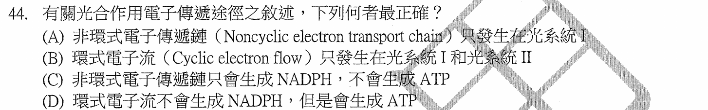
本地原卷PDF9 · 官方原答案PDF1（生物50題） · 已核對同年生物釋疑PDF2英文後至4（未列本題）
官方採計：D 原答案：D
未列本輪取得的112年度生物釋疑PDF2英文後至4；依同年答案，不宣稱沒有其他未取得公告
主分類：Ch10 Photosynthesis
10.3 / Cyclic Electron Flow
目錄行659；條目起始印刷頁198；實際目錄 PDF37
次分類：Ch10 Photosynthesis
10.3 / Linear Electron Flow
目錄行656；條目起始印刷頁197；實際目錄 PDF37
主分類理由：10.3 / Cyclic Electron Flow：循環電子流繞回PSI並增加ATP而不淨產NADPH。
次分類理由：10.3 / Linear Electron Flow：線性電子流涉及PSII及PSI並產ATP、NADPH，供對照。
科學說明：官方D。循環電子流使用PSI而不需PSII的光化學反應，不以還原NADP+為淨產物；線性電子流才淨形成NADPH並由水補電子。
來源涵蓋範圍：以本地Campbell實際目錄及列示正文作分類依據，原題限定與同年釋疑另存；不將正文小標冒充目錄條目。
教材正文：印刷197／PDF246、印刷198／PDF247、印刷199／PDF248
補充來源：本題未另列課本外來源
另行比較：循環電子流是否淨產NADPH？
逐項比較PSI／PSII、ATP／NADPH；D正確，線性電子流次目支援反向判別。
結論：證據確認，分類疑義已解決。完整覆核紀錄
Q45 · 10.3 / A Comparison of Chemiosmosis in Chloroplasts and Mitochondria 正式分類
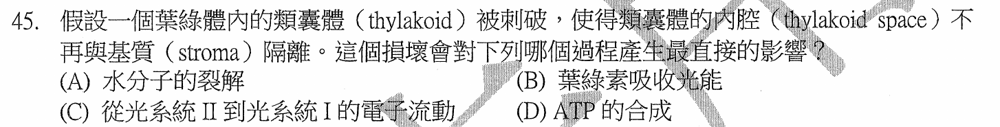
本地原卷PDF9 · 官方原答案PDF1（生物50題） · 已核對同年生物釋疑PDF2英文後至4（未列本題）
官方採計：D 原答案：D
未列本輪取得的112年度生物釋疑PDF2英文後至4；依同年答案，不宣稱沒有其他未取得公告
主分類：Ch10 Photosynthesis
10.3 / A Comparison of Chemiosmosis in Chloroplasts and Mitochondria
目錄行662；條目起始印刷頁199；實際目錄 PDF37
主分類理由：10.3 / A Comparison of Chemiosmosis in Chloroplasts and Mitochondria：類囊體膜破洞破壞質子梯度，直接妨礙化學滲透合成ATP。
次分類理由：無另列最小次條目；隔室消失首先破壞質子梯度，ATP合成最直接受影響；D確認，並保留其他過程可能間接受影響的層次。
科學說明：官方D（ATP合成）。重點是跨膜梯度消散，不是把光子吸收、水裂解或電子傳遞每步都說成必立即完全停止。原題「最直接」程度與機制一併保存。
來源涵蓋範圍：以本地Campbell實際目錄及列示正文作分類依據，原題限定與同年釋疑另存；不將正文小標冒充目錄條目。
教材正文：印刷199／PDF248、印刷200／PDF249
補充來源：本題未另列課本外來源
另行比較：破膜是否直接讓葉綠素不吸光？
隔室消失首先破壞質子梯度，ATP合成最直接受影響；D確認，並保留其他過程可能間接受影響的層次。
結論：證據確認，分類疑義已解決。完整覆核紀錄
Q46 · 12.2 / The Mitotic Spindle: A Closer Look 正式分類
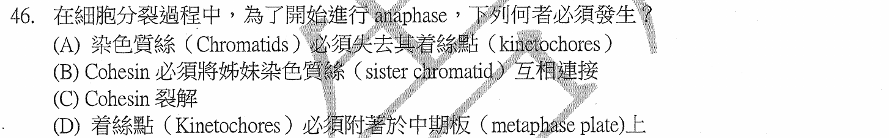
本地原卷PDF9 · 官方原答案PDF1（生物50題） · 已核對同年生物釋疑PDF2英文後至4（未列本題）
官方採計：C 原答案：C
未列本輪取得的112年度生物釋疑PDF2英文後至4；依同年答案，不宣稱沒有其他未取得公告
主分類：Ch12 The Cell Cycle
12.2 / The Mitotic Spindle: A Closer Look
目錄行773；條目起始印刷頁240；實際目錄 PDF38
次分類：Ch12 The Cell Cycle
12.3 / The Cell Cycle Control System
目錄行789；條目起始印刷頁244；實際目錄 PDF38
主分類理由：12.2 / The Mitotic Spindle: A Closer Look：後期啟動須解除姊妹染色分體之cohesin連結，再由紡錘體分離。
次分類理由：12.3 / The Cell Cycle Control System：中期檢查點與separase活化連結辨認與時序控制。
科學說明：官方C。Separase切開cohesin使姊妹染色分體分離，並非先把動粒與微管拆開；中期板是空間平面，不是待破壞的實體板。
來源涵蓋範圍：以本地Campbell實際目錄及列示正文作分類依據，原題限定與同年釋疑另存；不將正文小標冒充目錄條目。
教材正文：印刷238／PDF287、印刷239／PDF288、印刷240／PDF289、印刷241／PDF290、印刷242／PDF291、印刷246／PDF295、印刷247／PDF296
補充來源：本題未另列課本外來源
另行比較：cohesin連結與切解在何時發生？
重讀239–240與247，後期需separase切解；原A使染色分體失去動粒、D把中期板當附著結構均錯。其他章背景不需加列。
結論：證據確認，分類疑義已解決。完整覆核紀錄
Q47 · 29.1 / The Origin and Diversification of Plants 正式分類
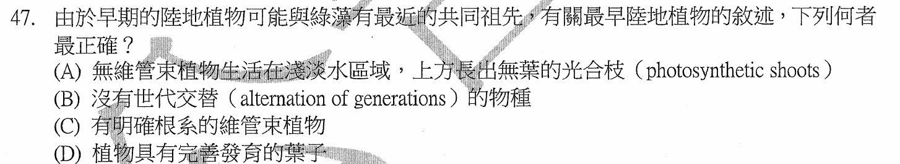
本地原卷PDF9 · 官方原答案PDF1（生物50題） · 已核對同年生物釋疑PDF2英文後至4（未列本題）
官方採計：A 原答案：A
未列本輪取得的112年度生物釋疑PDF2英文後至4；依同年答案，不宣稱沒有其他未取得公告
主分類：Ch29 Plant Diversity I: How Plants Colonized Land
29.1 / The Origin and Diversification of Plants
目錄行1870；條目起始印刷頁621；實際目錄 PDF43
次分類：Ch29 Plant Diversity I: How Plants Colonized Land
29.1 / Evidence of Algal Ancestry
目錄行1861；條目起始印刷頁619；實際目錄 PDF43
主分類理由：29.1 / The Origin and Diversification of Plants：比較最早陸生植物與後續維管、根葉演化。
次分類理由：29.1 / Evidence of Algal Ancestry：綠藻親緣證據提供題目演化起點。
科學說明：官方A。最早陸生植物缺乏真正根葉，不能套入成熟的根莖葉與維管構造；原A寫生活在淺淡水區域、長出無葉光合枝，不是淺生根狀構造。教材以化石與藻類親緣作推論，未將某一現生苔蘚當成所有陸生植物的直接祖先。
來源涵蓋範圍：以本地Campbell實際目錄及列示正文作分類依據，原題限定與同年釋疑另存；不將正文小標冒充目錄條目。
教材正文：印刷619／PDF668、印刷621／PDF670、印刷622／PDF671、印刷623／PDF672
補充來源：本題未另列課本外來源
另行比較：原A是否談淺生根狀構造？
第二輪原圖其實寫生活在淺淡水區域、無葉光合枝，修正初稿誤讀。619棲地與621早期根葉缺乏支持意旨；早期植物起源主目與藻類親緣次目確認。
結論：證據確認，分類疑義已解決。完整覆核紀錄
Q48 · 7.3 / Facilitated Diffusion: Passive Transport Aided by Proteins 正式分類
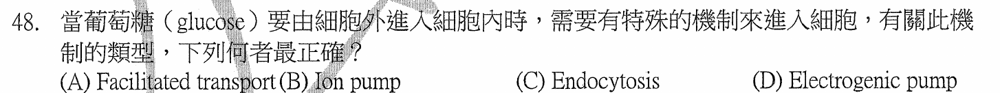
本地原卷PDF9 · 官方原答案PDF1（生物50題） · 已核對同年生物釋疑PDF2英文後至4（未列本題）
官方採計：A 原答案：A
未列本輪取得的112年度生物釋疑PDF2英文後至4；依同年答案，不宣稱沒有其他未取得公告
主分類：Ch07 Membrane Structure and Function
7.3 / Facilitated Diffusion: Passive Transport Aided by Proteins
目錄行443；條目起始印刷頁135；實際目錄 PDF36
主分類理由：7.3 / Facilitated Diffusion: Passive Transport Aided by Proteins：辨認葡萄糖藉膜載體順梯度進入細胞的促進性擴散。
次分類理由：無另列最小次條目；原題未指定腸細胞與梯度，A為四選一最合適；136紅血球葡萄糖促進擴散提供具體例子，與腸道情境分開。
科學說明：官方A。在本題選項下採促進性運輸；葡萄糖極性大而不易直接穿脂雙層。題幹沒有指定細胞或梯度，不能擴張成所有葡萄糖運輸都為被動作用；Q12的腸道Na+/glucose共運輸是另一情境。
來源涵蓋範圍：以本地Campbell實際目錄及列示正文作分類依據，原題限定與同年釋疑另存；不將正文小標冒充目錄條目。
教材正文：印刷134／PDF183、印刷135／PDF184、印刷136／PDF185
補充來源：本題未另列課本外來源
另行比較：是否可與Q12共運輸矛盾？
原題未指定腸細胞與梯度，A為四選一最合適；136紅血球葡萄糖促進擴散提供具體例子，與腸道情境分開。
結論：證據確認，分類疑義已解決。完整覆核紀錄
Q49 · 8.3 / The Structure and Hydrolysis of ATP 正式分類
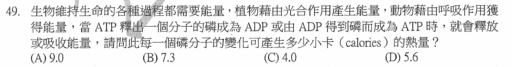
本地原卷PDF9 · 官方原答案PDF1（生物50題） · 已核對同年生物釋疑PDF2英文後至4（未列本題）
官方採計：B 原答案：B
未列本輪取得的112年度生物釋疑PDF2英文後至4；依同年答案，不宣稱沒有其他未取得公告
主分類：Ch08 An Introduction to Metabolism
8.3 / The Structure and Hydrolysis of ATP
目錄行504；條目起始印刷頁150；實際目錄 PDF37
次分類：Ch08 An Introduction to Metabolism
8.3 / The Regeneration of ATP
目錄行510；條目起始印刷頁153；實際目錄 PDF37
主分類理由：8.3 / The Structure and Hydrolysis of ATP：ATP水解的自由能、數值及單位須同時辨認。
次分類理由：8.3 / The Regeneration of ATP：ATP再生需輸入能量，可反向檢查水解與合成關係。
科學說明：官方B（數字7.3），保留採計。原題以每一分子及小卡calories提問，教材標準值則是每莫耳ATP水解ΔG約−7.3 kcal/mol，不能只抄7.3而不管單位。換成單分子約1.21×10⁻²⁰ cal自由能，細胞實際ΔG依條件變動；斷鍵本身需能量，淨釋能來自整體反應，不將自由能等同所有情境的熱量。
來源涵蓋範圍：以本地Campbell實際目錄及列示正文作分類依據，原題限定與同年釋疑另存；不將正文小標冒充目錄條目。
教材正文：印刷150／PDF199、印刷151／PDF200、印刷152／PDF201、印刷153／PDF202
補充來源：本題未另列課本外來源
另行比較：7.3的計量單位及裁切是否正確？
原圖每個磷分子、小卡、熱量皆保留，依151頁分清kcal/mol及自由能。發現原裁圖混入Q50首行，調整邊界後重新開圖確認Q49全題完整。
結論：證據確認，分類疑義已解決。完整覆核紀錄
Q50 · 36.4 / Mechanisms of Stomatal Opening and Closing 正式分類
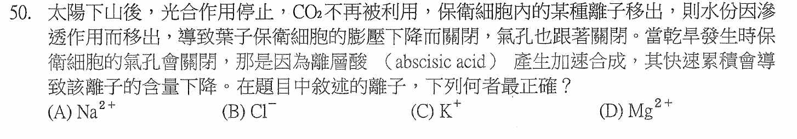
本地原卷PDF9 · 官方原答案PDF1（生物50題） · 同年釋疑PDF4
官方採計：C 原答案：C
112年度釋疑維持C
主分類：Ch36 Resource Acquisition and Transport in Vascular Plants
36.4 / Mechanisms of Stomatal Opening and Closing
目錄行2394；條目起始印刷頁797；實際目錄 PDF45
次分類：Ch36 Resource Acquisition and Transport in Vascular Plants
36.4 / Stimuli for Stomatal Opening and Closing
目錄行2397；條目起始印刷頁798；實際目錄 PDF45
次分類：Ch39 Plant Responses to Internal and External Signals
39.2 / A Survey of Plant Hormones
目錄行2557；條目起始印刷頁847；實際目錄 PDF45
主分類理由：36.4 / Mechanisms of Stomatal Opening and Closing：保衛細胞K+流出造成失水、膨壓降低與氣孔關閉。
次分類理由：36.4 / Stimuli for Stomatal Opening and Closing：環境訊號控制開閉；39.2 / A Survey of Plant Hormones：ABA旱訊號透過離子通道促關閉。
科學說明：官方C，釋疑PDF4維持。K+移出後滲透失水，關閉的是氣孔；原題Na²⁺應為Na+的電荷錯植照留原圖。公告提851／852及Fig36.14；本地ABA正文在852，Fig36.14實在印刷797／PDF846，兩種定位分開記錄，不把公告頁碼直接當本地圖頁。
來源涵蓋範圍：以本地Campbell實際目錄及列示正文作分類依據，原題限定與同年釋疑另存；不將正文小標冒充目錄條目。
教材正文：印刷797／PDF846、印刷798／PDF847、印刷849／PDF898、印刷850／PDF899、印刷851／PDF900、印刷852／PDF901
補充來源：本題未另列課本外來源
另行比較：Q50開頭是否因裁切遺失，圖號頁碼是否可沿用？
第二輪發現首行切開，回完整原頁重新裁切並再次讀完題幹與A–D。K+流出、ABA及Fig36.14印刷797／PDF846核對；公告851/852、原Na²⁺誤植均另記。
結論：證據確認，分類疑義已解決。完整覆核紀錄
目前篩選沒有符合的題目；本年度總數仍為50題。
補充來源
查證日期：2026-09-10。使用原始研究摘要、官方資料與作者教材，不宣稱所有出版商全文已取得。詳細界線見來源紀錄。
- S01 Yoon等（2009）：Paulinella光合胞器的獨立初級起源
Paulinella chromatophora的光合胞器來自另一宗取得藍綠菌的初級內共生；第二宗初級事件不等於次級內共生。
實讀範圍：原始研究摘要背景及目標段；已下載HTML並提取聚焦段，未宣稱全篇實讀。
原始來源1 - S02 Aman等（2018）：斑馬魚鱗發育原始研究
硬骨魚鱗為嵌在真皮中的鈣化細胞外基質；原題把魚鱗一概列表皮衍生物過寬。
實讀範圍：正文Introduction的硬骨魚鱗片真皮基質段及摘要；HTML保存，逐字全文未讀。
原始來源1 - S03 NCBI ClinVar：CFTR c.1624G>T／Gly542Ter
G542X為甘胺酸542改成終止的無義突變，本紀錄只核對變異身分與分子類型。
實讀範圍：頁首HGVS及Molecular consequence的nonsense欄；原HTML與聚焦讀回雜湊已存。
原始來源1 - S04 Adelaide University真菌學詞彙
節生、芽生、分生及孢囊孢子支援無性1、4、5、7；子囊、擔及接合孢子支援有性對照。
實讀範圍：web實讀arthroconidium、ascospore、basidiospore、blastoconidium、conidium、sporangiospore、zygospore條目。直接下載SSL失敗，未有原始HTML雜湊；作者讀回紀錄雜湊不可冒作網站原檔雜湊。
原始來源1 - S05 Böhm等（2013）：青黴的有性生殖與菌株發展
Q176×IB08/921在添加biotin的燕麥培養基條件可產可育子囊孢子並具重組證據。論文承認廣義P.chrysogenum內分類差異，不能推及所有Penicillium菌株及條件。
實讀範圍：摘要及Results首節、Fig1圖說，PDF1–2；作者PDF網頁可讀但直接下載SSL失敗，PMC HTML下載成功。
原始來源1 · 原始來源2 - S06 Hagman等：Analysis of the yeast short-term Crabtree effect and its origin
部分酵母有氧仍快速累積乙醇。研究是葡萄糖條件，不當作TCU112Q5麥芽糖的實驗重現。
實讀範圍：原始實驗摘要，十種酵母在有氧及限葡萄糖培養後加糖的比較；已存HTML。
原始來源1 - S07 WHO：COVID-19傳播及Zika事實資料
COVID-19經呼吸粒子傳播，Zika主要蚊媒且也有其他途徑；兩者RNA身分支援題目丙丁錯誤。資料更新日期不改變112年題幹最近15年的時間範圍。
實讀範圍：2021-12-23 COVID-19傳播Q&A、2025-11-06 Zika傳播及RNA檢測段已存HTML；2020 WHO SARS-CoV-2 RNA文件Introduction以web檢索讀回，未另下載。
原始來源1 · 原始來源2 · 原始來源3 - S08 Wilkie等（2002）：神經脊黑色素細胞譜系原始研究
補足Campbell器官形成段未直接列出的皮膚色素前驅來源，支持Q3A；不把眼部所有色素細胞都歸同一來源。
實讀範圍：PubMed原始研究摘要，神經脊melanoblast為皮膚、毛髮色素細胞前驅；web實讀，沒有聲稱出版商全文已下載。
原始來源1